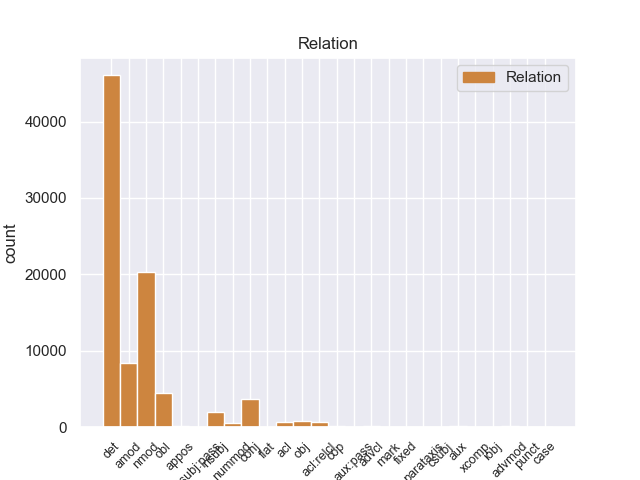
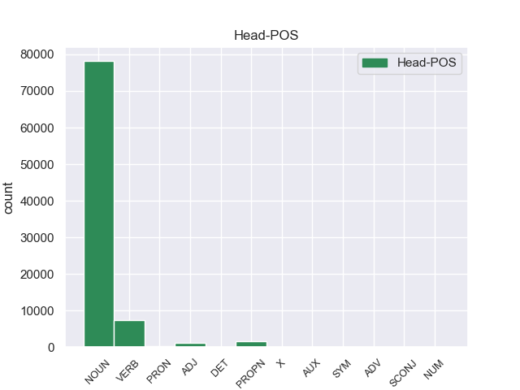
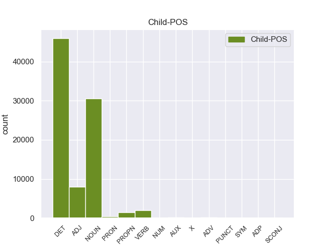

Distribution of features within this leaf



Agreement Rules sorted by frequency.
- When the dependent token is the determiner(det) of the head token, and the dependent token is DET.
1 En _ _ _ _ 0 _ _ _
2 1991 _ _ _ _ 0 _ _ _
3 , _ _ _ _ 0 _ _ _
4 como _ _ _ _ 0 _ _ _
5 ya _ _ _ _ 0 _ _ _
6 está _ _ _ _ 0 _ _ _
7 indicado _ _ _ _ 0 _ _ _
8 en _ _ _ _ 0 _ _ _
9 el _ _ _ _ 0 _ _ _
10 párrafo _ _ _ _ 0 _ _ _
11 anterior _ _ _ _ 0 _ _ _
12 , _ _ _ _ 0 _ _ _
13 se _ _ _ _ 0 _ _ _
14 creó _ _ _ _ 0 _ _ _
15 un _ _ _ _ 0 _ _ _
16 equipo _ _ _ _ 0 _ _ _
17 ad _ _ _ _ 0 _ _ _
18 hoc _ _ _ _ 0 _ _ _
19 para _ _ _ _ 0 _ _ _
20 averiguar _ _ _ _ 0 _ _ _
21 como _ _ _ _ 0 _ _ _
22 se _ _ _ _ 0 _ _ _
23 podía _ _ _ _ 0 _ _ _
24 desarrollar _ _ _ _ 0 _ _ _
25 el _ _ _ _ 0 _ _ _
26 Dialogo _ _ _ _ 0 _ _ _
27 Social _ _ _ _ 0 _ _ _
28 , _ _ _ _ 0 _ _ _
29 este _ _ _ _ 0 _ _ _
30 equipo _ _ _ _ 0 _ _ _
31 estaba _ _ _ _ 0 _ _ _
32 formado _ _ _ _ 0 _ _ _
33 por _ _ _ _ 0 _ _ _
34 representantes _ _ _ _ 0 _ _ _
35 de _ _ _ _ 0 _ _ _
36 todas _ _ _ _ 0 _ _ _
37 las el DET _ Definite=Def|Gender=Fem|Number=Plur|PronType=Art 38 det _ _
38 organizaciones organizacione NOUN _ Gender=Fem|Number=Plur 0 _ _ _
39 relacionadas _ _ _ _ 0 _ _ _
40 con _ _ _ _ 0 _ _ _
41 CES _ _ _ _ 0 _ _ _
42 , _ _ _ _ 0 _ _ _
43 UNICE _ _ _ _ 0 _ _ _
44 y _ _ _ _ 0 _ _ _
45 CEEP _ _ _ _ 0 _ _ _
46 ; _ _ _ _ 0 _ _ _
1 Esta _ _ _ _ 0 _ _ _
2 teoría _ _ _ _ 0 _ _ _
3 se _ _ _ _ 0 _ _ _
4 avenía _ _ _ _ 0 _ _ _
5 bien _ _ _ _ 0 _ _ _
6 con _ _ _ _ 0 _ _ _
7 la _ _ _ _ 0 _ _ _
8 creencia _ _ _ _ 0 _ _ _
9 de _ _ _ _ 0 _ _ _
10 el _ _ _ _ 0 _ _ _
11 Romanticismo _ _ _ _ 0 _ _ _
12 en _ _ _ _ 0 _ _ _
13 un _ _ _ _ 0 _ _ _
14 volkgeist _ _ _ _ 0 _ _ _
15 , _ _ _ _ 0 _ _ _
16 " _ _ _ _ 0 _ _ _
17 genio _ _ _ _ 0 _ _ _
18 o _ _ _ _ 0 _ _ _
19 espíritu espíritu NOUN _ Gender=Masc|Number=Sing 0 _ _ _
20 de _ _ _ _ 0 _ _ _
21 el _ _ _ _ 0 _ _ _
22 pueblo pueblo NOUN _ Gender=Masc|Number=Sing 19 nmod _ _
23 " _ _ _ _ 0 _ _ _
24 , _ _ _ _ 0 _ _ _
25 autor _ _ _ _ 0 _ _ _
26 colectivo _ _ _ _ 0 _ _ _
27 y _ _ _ _ 0 _ _ _
28 anónimo _ _ _ _ 0 _ _ _
29 de _ _ _ _ 0 _ _ _
30 una _ _ _ _ 0 _ _ _
31 poesía _ _ _ _ 0 _ _ _
32 nacional _ _ _ _ 0 _ _ _
33 . _ _ _ _ 0 _ _ _
1 En _ _ _ _ 0 _ _ _
2 1991 _ _ _ _ 0 _ _ _
3 , _ _ _ _ 0 _ _ _
4 como _ _ _ _ 0 _ _ _
5 ya _ _ _ _ 0 _ _ _
6 está _ _ _ _ 0 _ _ _
7 indicado _ _ _ _ 0 _ _ _
8 en _ _ _ _ 0 _ _ _
9 el _ _ _ _ 0 _ _ _
10 párrafo _ _ _ _ 0 _ _ _
11 anterior _ _ _ _ 0 _ _ _
12 , _ _ _ _ 0 _ _ _
13 se _ _ _ _ 0 _ _ _
14 creó _ _ _ _ 0 _ _ _
15 un _ _ _ _ 0 _ _ _
16 equipo equipo NOUN _ Gender=Masc|Number=Sing 0 _ _ _
17 ad _ _ _ _ 0 _ _ _
18 hoc hoc ADJ _ Gender=Masc|Number=Sing 16 amod _ _
19 para _ _ _ _ 0 _ _ _
20 averiguar _ _ _ _ 0 _ _ _
21 como _ _ _ _ 0 _ _ _
22 se _ _ _ _ 0 _ _ _
23 podía _ _ _ _ 0 _ _ _
24 desarrollar _ _ _ _ 0 _ _ _
25 el _ _ _ _ 0 _ _ _
26 Dialogo _ _ _ _ 0 _ _ _
27 Social _ _ _ _ 0 _ _ _
28 , _ _ _ _ 0 _ _ _
29 este _ _ _ _ 0 _ _ _
30 equipo _ _ _ _ 0 _ _ _
31 estaba _ _ _ _ 0 _ _ _
32 formado _ _ _ _ 0 _ _ _
33 por _ _ _ _ 0 _ _ _
34 representantes _ _ _ _ 0 _ _ _
35 de _ _ _ _ 0 _ _ _
36 todas _ _ _ _ 0 _ _ _
37 las _ _ _ _ 0 _ _ _
38 organizaciones _ _ _ _ 0 _ _ _
39 relacionadas _ _ _ _ 0 _ _ _
40 con _ _ _ _ 0 _ _ _
41 CES _ _ _ _ 0 _ _ _
42 , _ _ _ _ 0 _ _ _
43 UNICE _ _ _ _ 0 _ _ _
44 y _ _ _ _ 0 _ _ _
45 CEEP _ _ _ _ 0 _ _ _
46 ; _ _ _ _ 0 _ _ _
1 En _ _ _ _ 0 _ _ _
2 1991 _ _ _ _ 0 _ _ _
3 , _ _ _ _ 0 _ _ _
4 como _ _ _ _ 0 _ _ _
5 ya _ _ _ _ 0 _ _ _
6 está _ _ _ _ 0 _ _ _
7 indicado indicado VERB _ Gender=Masc|Number=Sing|VerbForm=Part 0 _ _ _
8 en _ _ _ _ 0 _ _ _
9 el _ _ _ _ 0 _ _ _
10 párrafo párrafo NOUN _ Gender=Masc|Number=Sing 7 obl _ _
11 anterior _ _ _ _ 0 _ _ _
12 , _ _ _ _ 0 _ _ _
13 se _ _ _ _ 0 _ _ _
14 creó _ _ _ _ 0 _ _ _
15 un _ _ _ _ 0 _ _ _
16 equipo _ _ _ _ 0 _ _ _
17 ad _ _ _ _ 0 _ _ _
18 hoc _ _ _ _ 0 _ _ _
19 para _ _ _ _ 0 _ _ _
20 averiguar _ _ _ _ 0 _ _ _
21 como _ _ _ _ 0 _ _ _
22 se _ _ _ _ 0 _ _ _
23 podía _ _ _ _ 0 _ _ _
24 desarrollar _ _ _ _ 0 _ _ _
25 el _ _ _ _ 0 _ _ _
26 Dialogo _ _ _ _ 0 _ _ _
27 Social _ _ _ _ 0 _ _ _
28 , _ _ _ _ 0 _ _ _
29 este _ _ _ _ 0 _ _ _
30 equipo _ _ _ _ 0 _ _ _
31 estaba _ _ _ _ 0 _ _ _
32 formado _ _ _ _ 0 _ _ _
33 por _ _ _ _ 0 _ _ _
34 representantes _ _ _ _ 0 _ _ _
35 de _ _ _ _ 0 _ _ _
36 todas _ _ _ _ 0 _ _ _
37 las _ _ _ _ 0 _ _ _
38 organizaciones _ _ _ _ 0 _ _ _
39 relacionadas _ _ _ _ 0 _ _ _
40 con _ _ _ _ 0 _ _ _
41 CES _ _ _ _ 0 _ _ _
42 , _ _ _ _ 0 _ _ _
43 UNICE _ _ _ _ 0 _ _ _
44 y _ _ _ _ 0 _ _ _
45 CEEP _ _ _ _ 0 _ _ _
46 ; _ _ _ _ 0 _ _ _
1 Esta _ _ _ _ 0 _ _ _
2 teoría _ _ _ _ 0 _ _ _
3 se _ _ _ _ 0 _ _ _
4 avenía _ _ _ _ 0 _ _ _
5 bien _ _ _ _ 0 _ _ _
6 con _ _ _ _ 0 _ _ _
7 la _ _ _ _ 0 _ _ _
8 creencia _ _ _ _ 0 _ _ _
9 de _ _ _ _ 0 _ _ _
10 el _ _ _ _ 0 _ _ _
11 Romanticismo _ _ _ _ 0 _ _ _
12 en _ _ _ _ 0 _ _ _
13 un _ _ _ _ 0 _ _ _
14 volkgeist _ _ _ _ 0 _ _ _
15 , _ _ _ _ 0 _ _ _
16 " _ _ _ _ 0 _ _ _
17 genio _ _ _ _ 0 _ _ _
18 o _ _ _ _ 0 _ _ _
19 espíritu espíritu NOUN _ Gender=Masc|Number=Sing 0 _ _ _
20 de _ _ _ _ 0 _ _ _
21 el _ _ _ _ 0 _ _ _
22 pueblo _ _ _ _ 0 _ _ _
23 " _ _ _ _ 0 _ _ _
24 , _ _ _ _ 0 _ _ _
25 autor autor NOUN _ Gender=Masc|Number=Sing 19 conj _ _
26 colectivo _ _ _ _ 0 _ _ _
27 y _ _ _ _ 0 _ _ _
28 anónimo _ _ _ _ 0 _ _ _
29 de _ _ _ _ 0 _ _ _
30 una _ _ _ _ 0 _ _ _
31 poesía _ _ _ _ 0 _ _ _
32 nacional _ _ _ _ 0 _ _ _
33 . _ _ _ _ 0 _ _ _
1 En _ _ _ _ 0 _ _ _
2 1991 _ _ _ _ 0 _ _ _
3 , _ _ _ _ 0 _ _ _
4 como _ _ _ _ 0 _ _ _
5 ya _ _ _ _ 0 _ _ _
6 está _ _ _ _ 0 _ _ _
7 indicado _ _ _ _ 0 _ _ _
8 en _ _ _ _ 0 _ _ _
9 el _ _ _ _ 0 _ _ _
10 párrafo _ _ _ _ 0 _ _ _
11 anterior _ _ _ _ 0 _ _ _
12 , _ _ _ _ 0 _ _ _
13 se _ _ _ _ 0 _ _ _
14 creó _ _ _ _ 0 _ _ _
15 un _ _ _ _ 0 _ _ _
16 equipo _ _ _ _ 0 _ _ _
17 ad _ _ _ _ 0 _ _ _
18 hoc _ _ _ _ 0 _ _ _
19 para _ _ _ _ 0 _ _ _
20 averiguar _ _ _ _ 0 _ _ _
21 como _ _ _ _ 0 _ _ _
22 se _ _ _ _ 0 _ _ _
23 podía _ _ _ _ 0 _ _ _
24 desarrollar _ _ _ _ 0 _ _ _
25 el _ _ _ _ 0 _ _ _
26 Dialogo _ _ _ _ 0 _ _ _
27 Social _ _ _ _ 0 _ _ _
28 , _ _ _ _ 0 _ _ _
29 este _ _ _ _ 0 _ _ _
30 equipo equipo NOUN _ Gender=Masc|Number=Sing 32 nsubj _ _
31 estaba _ _ _ _ 0 _ _ _
32 formado formado VERB _ Gender=Masc|Number=Sing|Tense=Past|VerbForm=Part 0 _ _ _
33 por _ _ _ _ 0 _ _ _
34 representantes _ _ _ _ 0 _ _ _
35 de _ _ _ _ 0 _ _ _
36 todas _ _ _ _ 0 _ _ _
37 las _ _ _ _ 0 _ _ _
38 organizaciones _ _ _ _ 0 _ _ _
39 relacionadas _ _ _ _ 0 _ _ _
40 con _ _ _ _ 0 _ _ _
41 CES _ _ _ _ 0 _ _ _
42 , _ _ _ _ 0 _ _ _
43 UNICE _ _ _ _ 0 _ _ _
44 y _ _ _ _ 0 _ _ _
45 CEEP _ _ _ _ 0 _ _ _
46 ; _ _ _ _ 0 _ _ _
1 Joramun _ _ _ _ 0 _ _ _
2 se _ _ _ _ 0 _ _ _
3 supone _ _ _ _ 0 _ _ _
4 que _ _ _ _ 0 _ _ _
5 era _ _ _ _ 0 _ _ _
6 un _ _ _ _ 0 _ _ _
7 legendario legendario NOUN _ Gender=Masc|Number=Sing 8 amod _ _
8 Rey rey NOUN _ Gender=Masc|Number=Sing 0 _ _ _
9 - _ _ _ _ 0 _ _ _
10 Más _ _ _ _ 0 _ _ _
11 - _ _ _ _ 0 _ _ _
12 Allá _ _ _ _ 0 _ _ _
13 - _ _ _ _ 0 _ _ _
14 de _ _ _ _ 0 _ _ _
15 el _ _ _ _ 0 _ _ _
16 - _ _ _ _ 0 _ _ _
17 Muro _ _ _ _ 0 _ _ _
18 , _ _ _ _ 0 _ _ _
19 a _ _ _ _ 0 _ _ _
20 el _ _ _ _ 0 _ _ _
21 norte _ _ _ _ 0 _ _ _
22 de _ _ _ _ 0 _ _ _
23 los _ _ _ _ 0 _ _ _
24 Siete _ _ _ _ 0 _ _ _
25 Reinos _ _ _ _ 0 _ _ _
26 . _ _ _ _ 0 _ _ _
1 De _ _ _ _ 0 _ _ _
2 los _ _ _ _ 0 _ _ _
3 714 _ _ _ _ 0 _ _ _
4 habitantes _ _ _ _ 0 _ _ _
5 , _ _ _ _ 0 _ _ _
6 el _ _ _ _ 0 _ _ _
7 municipio _ _ _ _ 0 _ _ _
8 de _ _ _ _ 0 _ _ _
9 Daggett _ _ _ _ 0 _ _ _
10 estaba _ _ _ _ 0 _ _ _
11 compuesto _ _ _ _ 0 _ _ _
12 por _ _ _ _ 0 _ _ _
13 el _ _ _ _ 0 _ _ _
14 93.28 _ _ _ _ 0 _ _ _
15 % _ _ _ _ 0 _ _ _
16 blancos _ _ _ _ 0 _ _ _
17 , _ _ _ _ 0 _ _ _
18 el _ _ _ _ 0 _ _ _
19 2.38 _ _ _ _ 0 _ _ _
20 % _ _ _ _ 0 _ _ _
21 eran _ _ _ _ 0 _ _ _
22 afroamericanos _ _ _ _ 0 _ _ _
23 , _ _ _ _ 0 _ _ _
24 el _ _ _ _ 0 _ _ _
25 0.84 _ _ _ _ 0 _ _ _
26 % _ _ _ _ 0 _ _ _
27 eran _ _ _ _ 0 _ _ _
28 amerindios _ _ _ _ 0 _ _ _
29 , _ _ _ _ 0 _ _ _
30 el _ _ _ _ 0 _ _ _
31 0.56 _ _ _ _ 0 _ _ _
32 % _ _ _ _ 0 _ _ _
33 eran _ _ _ _ 0 _ _ _
34 asiáticos _ _ _ _ 0 _ _ _
35 , _ _ _ _ 0 _ _ _
36 el _ _ _ _ 0 _ _ _
37 0 _ _ _ _ 0 _ _ _
38 % _ _ _ _ 0 _ _ _
39 eran _ _ _ _ 0 _ _ _
40 isleños isleños NOUN _ Gender=Masc|Number=Plur 0 _ _ _
41 de _ _ _ _ 0 _ _ _
42 el _ _ _ _ 0 _ _ _
43 Pacífico pacífico PROPN _ Gender=Masc|Number=Sing 40 nmod _ _
44 , _ _ _ _ 0 _ _ _
45 el _ _ _ _ 0 _ _ _
46 0.84 _ _ _ _ 0 _ _ _
47 % _ _ _ _ 0 _ _ _
48 eran _ _ _ _ 0 _ _ _
49 de _ _ _ _ 0 _ _ _
50 otras _ _ _ _ 0 _ _ _
51 razas _ _ _ _ 0 _ _ _
52 y _ _ _ _ 0 _ _ _
53 el _ _ _ _ 0 _ _ _
54 2.1 _ _ _ _ 0 _ _ _
55 % _ _ _ _ 0 _ _ _
56 pertenecían _ _ _ _ 0 _ _ _
57 a _ _ _ _ 0 _ _ _
58 dos _ _ _ _ 0 _ _ _
59 o _ _ _ _ 0 _ _ _
60 más _ _ _ _ 0 _ _ _
61 razas _ _ _ _ 0 _ _ _
62 . _ _ _ _ 0 _ _ _
1 Saint _ _ _ _ 0 _ _ _
2 - _ _ _ _ 0 _ _ _
3 Hippolyte _ _ _ _ 0 _ _ _
4 ( _ _ _ _ 0 _ _ _
5 en _ _ _ _ 0 _ _ _
6 occitano _ _ _ _ 0 _ _ _
7 Sent _ _ _ _ 0 _ _ _
8 Ipòli _ _ _ _ 0 _ _ _
9 ) _ _ _ _ 0 _ _ _
10 es _ _ _ _ 0 _ _ _
11 una _ _ _ _ 0 _ _ _
12 población población NOUN _ Gender=Fem|Number=Sing 0 _ _ _
13 y _ _ _ _ 0 _ _ _
14 comuna _ _ _ _ 0 _ _ _
15 francesa _ _ _ _ 0 _ _ _
16 , _ _ _ _ 0 _ _ _
17 situada situada VERB _ Gender=Fem|Number=Sing|VerbForm=Part 12 acl _ _
18 en _ _ _ _ 0 _ _ _
19 la _ _ _ _ 0 _ _ _
20 región _ _ _ _ 0 _ _ _
21 de _ _ _ _ 0 _ _ _
22 Aquitania _ _ _ _ 0 _ _ _
23 , _ _ _ _ 0 _ _ _
24 departamento _ _ _ _ 0 _ _ _
25 de _ _ _ _ 0 _ _ _
26 Gironda _ _ _ _ 0 _ _ _
27 , _ _ _ _ 0 _ _ _
28 en _ _ _ _ 0 _ _ _
29 el _ _ _ _ 0 _ _ _
30 distrito _ _ _ _ 0 _ _ _
31 de _ _ _ _ 0 _ _ _
32 Libourne _ _ _ _ 0 _ _ _
33 y _ _ _ _ 0 _ _ _
34 cantón _ _ _ _ 0 _ _ _
35 de _ _ _ _ 0 _ _ _
36 Castillon _ _ _ _ 0 _ _ _
37 - _ _ _ _ 0 _ _ _
38 la _ _ _ _ 0 _ _ _
39 - _ _ _ _ 0 _ _ _
40 Bataille _ _ _ _ 0 _ _ _
41 . _ _ _ _ 0 _ _ _
1 En _ _ _ _ 0 _ _ _
2 1991 _ _ _ _ 0 _ _ _
3 , _ _ _ _ 0 _ _ _
4 como _ _ _ _ 0 _ _ _
5 ya _ _ _ _ 0 _ _ _
6 está _ _ _ _ 0 _ _ _
7 indicado _ _ _ _ 0 _ _ _
8 en _ _ _ _ 0 _ _ _
9 el _ _ _ _ 0 _ _ _
10 párrafo _ _ _ _ 0 _ _ _
11 anterior _ _ _ _ 0 _ _ _
12 , _ _ _ _ 0 _ _ _
13 se _ _ _ _ 0 _ _ _
14 creó _ _ _ _ 0 _ _ _
15 un _ _ _ _ 0 _ _ _
16 equipo _ _ _ _ 0 _ _ _
17 ad _ _ _ _ 0 _ _ _
18 hoc _ _ _ _ 0 _ _ _
19 para _ _ _ _ 0 _ _ _
20 averiguar _ _ _ _ 0 _ _ _
21 como _ _ _ _ 0 _ _ _
22 se _ _ _ _ 0 _ _ _
23 podía _ _ _ _ 0 _ _ _
24 desarrollar _ _ _ _ 0 _ _ _
25 el _ _ _ _ 0 _ _ _
26 Dialogo _ _ _ _ 0 _ _ _
27 Social _ _ _ _ 0 _ _ _
28 , _ _ _ _ 0 _ _ _
29 este _ _ _ _ 0 _ _ _
30 equipo _ _ _ _ 0 _ _ _
31 estaba _ _ _ _ 0 _ _ _
32 formado formado VERB _ Gender=Masc|Number=Sing|Tense=Past|VerbForm=Part 0 _ _ _
33 por _ _ _ _ 0 _ _ _
34 representantes representante NOUN _ Gender=Masc|Number=Plur 32 obj _ _
35 de _ _ _ _ 0 _ _ _
36 todas _ _ _ _ 0 _ _ _
37 las _ _ _ _ 0 _ _ _
38 organizaciones _ _ _ _ 0 _ _ _
39 relacionadas _ _ _ _ 0 _ _ _
40 con _ _ _ _ 0 _ _ _
41 CES _ _ _ _ 0 _ _ _
42 , _ _ _ _ 0 _ _ _
43 UNICE _ _ _ _ 0 _ _ _
44 y _ _ _ _ 0 _ _ _
45 CEEP _ _ _ _ 0 _ _ _
46 ; _ _ _ _ 0 _ _ _
1 En _ _ _ _ 0 _ _ _
2 1991 _ _ _ _ 0 _ _ _
3 , _ _ _ _ 0 _ _ _
4 como _ _ _ _ 0 _ _ _
5 ya _ _ _ _ 0 _ _ _
6 está _ _ _ _ 0 _ _ _
7 indicado _ _ _ _ 0 _ _ _
8 en _ _ _ _ 0 _ _ _
9 el _ _ _ _ 0 _ _ _
10 párrafo _ _ _ _ 0 _ _ _
11 anterior _ _ _ _ 0 _ _ _
12 , _ _ _ _ 0 _ _ _
13 se _ _ _ _ 0 _ _ _
14 creó _ _ _ _ 0 _ _ _
15 un _ _ _ _ 0 _ _ _
16 equipo equipo NOUN _ Gender=Masc|Number=Sing 0 _ _ _
17 ad _ _ _ _ 0 _ _ _
18 hoc _ _ _ _ 0 _ _ _
19 para _ _ _ _ 0 _ _ _
20 averiguar _ _ _ _ 0 _ _ _
21 como _ _ _ _ 0 _ _ _
22 se _ _ _ _ 0 _ _ _
23 podía _ _ _ _ 0 _ _ _
24 desarrollar _ _ _ _ 0 _ _ _
25 el _ _ _ _ 0 _ _ _
26 Dialogo _ _ _ _ 0 _ _ _
27 Social _ _ _ _ 0 _ _ _
28 , _ _ _ _ 0 _ _ _
29 este _ _ _ _ 0 _ _ _
30 equipo _ _ _ _ 0 _ _ _
31 estaba _ _ _ _ 0 _ _ _
32 formado formado VERB _ Gender=Masc|Number=Sing|Tense=Past|VerbForm=Part 16 acl:relcl _ _
33 por _ _ _ _ 0 _ _ _
34 representantes _ _ _ _ 0 _ _ _
35 de _ _ _ _ 0 _ _ _
36 todas _ _ _ _ 0 _ _ _
37 las _ _ _ _ 0 _ _ _
38 organizaciones _ _ _ _ 0 _ _ _
39 relacionadas _ _ _ _ 0 _ _ _
40 con _ _ _ _ 0 _ _ _
41 CES _ _ _ _ 0 _ _ _
42 , _ _ _ _ 0 _ _ _
43 UNICE _ _ _ _ 0 _ _ _
44 y _ _ _ _ 0 _ _ _
45 CEEP _ _ _ _ 0 _ _ _
46 ; _ _ _ _ 0 _ _ _
1 Jazmin _ _ _ _ 0 _ _ _
2 es _ _ _ _ 0 _ _ _
3 todo _ _ _ _ 0 _ _ _
4 lo _ _ _ _ 0 _ _ _
5 contrario _ _ _ _ 0 _ _ _
6 , _ _ _ _ 0 _ _ _
7 es _ _ _ _ 0 _ _ _
8 tímida tímida ADJ _ Gender=Masc|Number=Sing 0 _ _ _
9 y _ _ _ _ 0 _ _ _
10 callada callada ADJ _ Gender=Masc|Number=Sing 8 conj _ _
11 , _ _ _ _ 0 _ _ _
12 pero _ _ _ _ 0 _ _ _
13 siempre _ _ _ _ 0 _ _ _
14 es _ _ _ _ 0 _ _ _
15 arrastrada _ _ _ _ 0 _ _ _
16 por _ _ _ _ 0 _ _ _
17 las _ _ _ _ 0 _ _ _
18 locuras _ _ _ _ 0 _ _ _
19 y _ _ _ _ 0 _ _ _
20 travesuras _ _ _ _ 0 _ _ _
21 que _ _ _ _ 0 _ _ _
22 inventa _ _ _ _ 0 _ _ _
23 Alma _ _ _ _ 0 _ _ _
24 . _ _ _ _ 0 _ _ _
1 Por _ _ _ _ 0 _ _ _
2 otro _ _ _ _ 0 _ _ _
3 lado _ _ _ _ 0 _ _ _
4 , _ _ _ _ 0 _ _ _
5 se _ _ _ _ 0 _ _ _
6 incorporó _ _ _ _ 0 _ _ _
7 a _ _ _ _ 0 _ _ _
8 el _ _ _ _ 0 _ _ _
9 economista _ _ _ _ 0 _ _ _
10 Domingo _ _ _ _ 0 _ _ _
11 Cavallo _ _ _ _ 0 _ _ _
12 en _ _ _ _ 0 _ _ _
13 el _ _ _ _ 0 _ _ _
14 tercer tercer NOUN _ Gender=Masc|Number=Sing 15 nummod _ _
15 lugar lugar NOUN _ Gender=Masc|Number=Sing 0 _ _ _
16 de _ _ _ _ 0 _ _ _
17 la _ _ _ _ 0 _ _ _
18 nómina _ _ _ _ 0 _ _ _
19 de _ _ _ _ 0 _ _ _
20 candidatos _ _ _ _ 0 _ _ _
21 a _ _ _ _ 0 _ _ _
22 diputados _ _ _ _ 0 _ _ _
23 nacionales _ _ _ _ 0 _ _ _
24 . _ _ _ _ 0 _ _ _
1 Un _ _ _ _ 0 _ _ _
2 buen _ _ _ _ 0 _ _ _
3 almacén almacén NOUN _ Gender=Masc|Number=Sing 0 _ _ _
4 de _ _ _ _ 0 _ _ _
5 maderas _ _ _ _ 0 _ _ _
6 con _ _ _ _ 0 _ _ _
7 mucha _ _ _ _ 0 _ _ _
8 variedad _ _ _ _ 0 _ _ _
9 y _ _ _ _ 0 _ _ _
10 muy _ _ _ _ 0 _ _ _
11 bien _ _ _ _ 0 _ _ _
12 atendido atendido VERB _ Gender=Masc|Number=Sing 3 conj _ _
13 . _ _ _ _ 0 _ _ _
1 Jazmin _ _ _ _ 0 _ _ _
2 es _ _ _ _ 0 _ _ _
3 todo _ _ _ _ 0 _ _ _
4 lo lo PRON _ Case=Acc|Gender=Masc|Number=Sing|Person=3|PrepCase=Npr|PronType=Prs 5 det _ _
5 contrario contrario NOUN _ Gender=Masc|Number=Sing 0 _ _ _
6 , _ _ _ _ 0 _ _ _
7 es _ _ _ _ 0 _ _ _
8 tímida _ _ _ _ 0 _ _ _
9 y _ _ _ _ 0 _ _ _
10 callada _ _ _ _ 0 _ _ _
11 , _ _ _ _ 0 _ _ _
12 pero _ _ _ _ 0 _ _ _
13 siempre _ _ _ _ 0 _ _ _
14 es _ _ _ _ 0 _ _ _
15 arrastrada _ _ _ _ 0 _ _ _
16 por _ _ _ _ 0 _ _ _
17 las _ _ _ _ 0 _ _ _
18 locuras _ _ _ _ 0 _ _ _
19 y _ _ _ _ 0 _ _ _
20 travesuras _ _ _ _ 0 _ _ _
21 que _ _ _ _ 0 _ _ _
22 inventa _ _ _ _ 0 _ _ _
23 Alma _ _ _ _ 0 _ _ _
24 . _ _ _ _ 0 _ _ _
1 Mientras _ _ _ _ 0 _ _ _
2 tanto _ _ _ _ 0 _ _ _
3 , _ _ _ _ 0 _ _ _
4 los _ _ _ _ 0 _ _ _
5 Los _ _ _ _ 0 _ _ _
6 Angeles _ _ _ _ 0 _ _ _
7 Lakers _ _ _ _ 0 _ _ _
8 , _ _ _ _ 0 _ _ _
9 que _ _ _ _ 0 _ _ _
10 habían _ _ _ _ 0 _ _ _
11 elegido elegido VERB _ Gender=Masc|Number=Sing|Tense=Past|VerbForm=Part 0 _ _ _
12 a _ _ _ _ 0 _ _ _
13 el _ _ _ _ 0 _ _ _
14 jugador _ _ _ _ 0 _ _ _
15 en _ _ _ _ 0 _ _ _
16 en _ _ _ _ 0 _ _ _
17 la _ _ _ _ 0 _ _ _
18 trigésimo _ _ _ _ 0 _ _ _
19 primera _ _ _ _ 0 _ _ _
20 posición _ _ _ _ 0 _ _ _
21 de _ _ _ _ 0 _ _ _
22 el _ _ _ _ 0 _ _ _
23 Draft _ _ _ _ 0 _ _ _
24 de _ _ _ _ 0 _ _ _
25 la _ _ _ _ 0 _ _ _
26 NBA _ _ _ _ 0 _ _ _
27 de _ _ _ _ 0 _ _ _
28 1973 _ _ _ _ 0 _ _ _
29 , _ _ _ _ 0 _ _ _
30 habían _ _ _ _ 0 _ _ _
31 traspasado traspasado VERB _ Gender=Masc|Number=Sing|Tense=Past|VerbForm=Part 11 advcl _ _
32 sus _ _ _ _ 0 _ _ _
33 derechos _ _ _ _ 0 _ _ _
34 a _ _ _ _ 0 _ _ _
35 Cleveland _ _ _ _ 0 _ _ _
36 Cavaliers _ _ _ _ 0 _ _ _
37 a _ _ _ _ 0 _ _ _
38 cambio _ _ _ _ 0 _ _ _
39 de _ _ _ _ 0 _ _ _
40 una _ _ _ _ 0 _ _ _
41 futura _ _ _ _ 0 _ _ _
42 primera _ _ _ _ 0 _ _ _
43 ronda _ _ _ _ 0 _ _ _
44 de _ _ _ _ 0 _ _ _
45 el _ _ _ _ 0 _ _ _
46 draft _ _ _ _ 0 _ _ _
47 . _ _ _ _ 0 _ _ _
1 Ahora _ _ _ _ 0 _ _ _
2 se _ _ _ _ 0 _ _ _
3 aunan _ _ _ _ 0 _ _ _
4 cocina _ _ _ _ 0 _ _ _
5 y _ _ _ _ 0 _ _ _
6 entorno _ _ _ _ 0 _ _ _
7 , _ _ _ _ 0 _ _ _
8 me _ _ _ _ 0 _ _ _
9 encanto _ _ _ _ 0 _ _ _
10 la _ _ _ _ 0 _ _ _
11 bodega _ _ _ _ 0 _ _ _
12 , _ _ _ _ 0 _ _ _
13 las _ _ _ _ 0 _ _ _
14 sillas _ _ _ _ 0 _ _ _
15 son _ _ _ _ 0 _ _ _
16 comodisimas _ _ _ _ 0 _ _ _
17 , _ _ _ _ 0 _ _ _
18 la _ _ _ _ 0 _ _ _
19 iluminacion _ _ _ _ 0 _ _ _
20 es _ _ _ _ 0 _ _ _
21 excepcional _ _ _ _ 0 _ _ _
22 , _ _ _ _ 0 _ _ _
23 alcanzas _ _ _ _ 0 _ _ _
24 un _ _ _ _ 0 _ _ _
25 grado _ _ _ _ 0 _ _ _
26 de _ _ _ _ 0 _ _ _
27 satisfaccion _ _ _ _ 0 _ _ _
28 que _ _ _ _ 0 _ _ _
29 no _ _ _ _ 0 _ _ _
30 se _ _ _ _ 0 _ _ _
31 puede _ _ _ _ 0 _ _ _
32 describir _ _ _ _ 0 _ _ _
33 , _ _ _ _ 0 _ _ _
34 hay _ _ _ _ 0 _ _ _
35 que _ _ _ _ 0 _ _ _
36 probar _ _ _ _ 0 _ _ _
37 lo _ _ _ _ 0 _ _ _
38 , _ _ _ _ 0 _ _ _
39 es _ _ _ _ 0 _ _ _
40 la _ _ _ _ 0 _ _ _
41 primera primero ADJ _ Gender=Fem|Number=Sing 42 nummod _ _
42 vez vez NOUN _ Gender=Fem|Number=Sing 0 _ _ _
43 en _ _ _ _ 0 _ _ _
44 mi _ _ _ _ 0 _ _ _
45 vda _ _ _ _ 0 _ _ _
46 que _ _ _ _ 0 _ _ _
47 una _ _ _ _ 0 _ _ _
48 cocina _ _ _ _ 0 _ _ _
49 me _ _ _ _ 0 _ _ _
50 emociona _ _ _ _ 0 _ _ _
51 hasta _ _ _ _ 0 _ _ _
52 ese _ _ _ _ 0 _ _ _
53 punto _ _ _ _ 0 _ _ _
54 . _ _ _ _ 0 _ _ _
1 Ese _ _ _ _ 0 _ _ _
2 mismo mismo DET _ Gender=Masc|Number=Sing 3 amod _ _
3 año año NOUN _ Gender=Masc|Number=Sing 0 _ _ _
4 participó _ _ _ _ 0 _ _ _
5 con _ _ _ _ 0 _ _ _
6 el _ _ _ _ 0 _ _ _
7 equipo _ _ _ _ 0 _ _ _
8 ruso _ _ _ _ 0 _ _ _
9 en _ _ _ _ 0 _ _ _
10 la _ _ _ _ 0 _ _ _
11 Olimpiada _ _ _ _ 0 _ _ _
12 de _ _ _ _ 0 _ _ _
13 Ajedrez _ _ _ _ 0 _ _ _
14 de _ _ _ _ 0 _ _ _
15 Estambul _ _ _ _ 0 _ _ _
16 y _ _ _ _ 0 _ _ _
17 obtuvo _ _ _ _ 0 _ _ _
18 la _ _ _ _ 0 _ _ _
19 medalla _ _ _ _ 0 _ _ _
20 de _ _ _ _ 0 _ _ _
21 bronce _ _ _ _ 0 _ _ _
22 en _ _ _ _ 0 _ _ _
23 tanto _ _ _ _ 0 _ _ _
24 que _ _ _ _ 0 _ _ _
25 mejor _ _ _ _ 0 _ _ _
26 segunda _ _ _ _ 0 _ _ _
27 jugador _ _ _ _ 0 _ _ _
28 reservista _ _ _ _ 0 _ _ _
29 de _ _ _ _ 0 _ _ _
30 el _ _ _ _ 0 _ _ _
31 torneo _ _ _ _ 0 _ _ _
32 ( _ _ _ _ 0 _ _ _
33 los _ _ _ _ 0 _ _ _
34 equipos _ _ _ _ 0 _ _ _
35 estaban _ _ _ _ 0 _ _ _
36 formados _ _ _ _ 0 _ _ _
37 por _ _ _ _ 0 _ _ _
38 cuatro _ _ _ _ 0 _ _ _
39 jugadores _ _ _ _ 0 _ _ _
40 titulares _ _ _ _ 0 _ _ _
41 y _ _ _ _ 0 _ _ _
42 dos _ _ _ _ 0 _ _ _
43 reservas _ _ _ _ 0 _ _ _
44 ) _ _ _ _ 0 _ _ _
45 . _ _ _ _ 0 _ _ _
1 De _ _ _ _ 0 _ _ _
2 esta _ _ _ _ 0 _ _ _
3 época _ _ _ _ 0 _ _ _
4 data _ _ _ _ 0 _ _ _
5 toda _ _ _ _ 0 _ _ _
6 una _ _ _ _ 0 _ _ _
7 serie serie NOUN _ Gender=Fem|Number=Sing 0 _ _ _
8 de _ _ _ _ 0 _ _ _
9 Madonas _ _ _ _ 0 _ _ _
10 influidas influidas ADJ _ Gender=Fem|Number=Sing|VerbForm=Part 7 acl _ _
11 por _ _ _ _ 0 _ _ _
12 Lippi _ _ _ _ 0 _ _ _
13 . _ _ _ _ 0 _ _ _
1 Un _ _ _ _ 0 _ _ _
2 buen _ _ _ _ 0 _ _ _
3 almacén _ _ _ _ 0 _ _ _
4 de _ _ _ _ 0 _ _ _
5 maderas _ _ _ _ 0 _ _ _
6 con _ _ _ _ 0 _ _ _
7 mucha _ _ _ _ 0 _ _ _
8 variedad _ _ _ _ 0 _ _ _
9 y _ _ _ _ 0 _ _ _
10 muy _ _ _ _ 0 _ _ _
11 bien bien ADV _ Gender=Masc|Number=Sing 12 advmod _ _
12 atendido atendido VERB _ Gender=Masc|Number=Sing 0 _ _ _
13 . _ _ _ _ 0 _ _ _
1 Con _ _ _ _ 0 _ _ _
2 miras _ _ _ _ 0 _ _ _
3 a _ _ _ _ 0 _ _ _
4 minimizar _ _ _ _ 0 _ _ _
5 cualquier _ _ _ _ 0 _ _ _
6 confusión _ _ _ _ 0 _ _ _
7 con _ _ _ _ 0 _ _ _
8 una _ _ _ _ 0 _ _ _
9 religión _ _ _ _ 0 _ _ _
10 , _ _ _ _ 0 _ _ _
11 el _ _ _ _ 0 _ _ _
12 uso _ _ _ _ 0 _ _ _
13 de _ _ _ _ 0 _ _ _
14 la _ _ _ _ 0 _ _ _
15 palabra _ _ _ _ 0 _ _ _
16 " _ _ _ _ 0 _ _ _
17 templo _ _ _ _ 0 _ _ _
18 " _ _ _ _ 0 _ _ _
19 para _ _ _ _ 0 _ _ _
20 describir _ _ _ _ 0 _ _ _
21 los _ _ _ _ 0 _ _ _
22 inmuebles _ _ _ _ 0 _ _ _
23 de _ _ _ _ 0 _ _ _
24 los _ _ _ _ 0 _ _ _
25 Shriners _ _ _ _ 0 _ _ _
26 ha _ _ _ _ 0 _ _ _
27 sido ser AUX _ Gender=Masc|Number=Sing|Tense=Past|VerbForm=Part 28 aux _ _
28 reemplazado reemplazado VERB _ Gender=Masc|Number=Sing|Tense=Past|VerbForm=Part 0 _ _ _
29 por _ _ _ _ 0 _ _ _
30 la _ _ _ _ 0 _ _ _
31 frase _ _ _ _ 0 _ _ _
32 " _ _ _ _ 0 _ _ _
33 Centro _ _ _ _ 0 _ _ _
34 Shriner _ _ _ _ 0 _ _ _
35 " _ _ _ _ 0 _ _ _
36 , _ _ _ _ 0 _ _ _
37 aunque _ _ _ _ 0 _ _ _
38 en _ _ _ _ 0 _ _ _
39 capítulos _ _ _ _ 0 _ _ _
40 individuales _ _ _ _ 0 _ _ _
41 siguen _ _ _ _ 0 _ _ _
42 siendo _ _ _ _ 0 _ _ _
43 nombrados _ _ _ _ 0 _ _ _
44 como _ _ _ _ 0 _ _ _
45 " _ _ _ _ 0 _ _ _
46 templos _ _ _ _ 0 _ _ _
47 " _ _ _ _ 0 _ _ _
48 . _ _ _ _ 0 _ _ _
1 Se _ _ _ _ 0 _ _ _
2 quedaron _ _ _ _ 0 _ _ _
3 fuera _ _ _ _ 0 _ _ _
4 de _ _ _ _ 0 _ _ _
5 la _ _ _ _ 0 _ _ _
6 ' _ _ _ _ 0 _ _ _
7 final _ _ _ _ 0 _ _ _
8 ' _ _ _ _ 0 _ _ _
9 la _ _ _ _ 0 _ _ _
10 atleta _ _ _ _ 0 _ _ _
11 palentina _ _ _ _ 0 _ _ _
12 Marta _ _ _ _ 0 _ _ _
13 Domínguez _ _ _ _ 0 _ _ _
14 , _ _ _ _ 0 _ _ _
15 el _ _ _ _ 0 _ _ _
16 ciclista _ _ _ _ 0 _ _ _
17 Óscar _ _ _ _ 0 _ _ _
18 Freire _ _ _ _ 0 _ _ _
19 , _ _ _ _ 0 _ _ _
20 la _ _ _ _ 0 _ _ _
21 regata _ _ _ _ 0 _ _ _
22 Oxford _ _ _ _ 0 _ _ _
23 - _ _ _ _ 0 _ _ _
24 Cambridge _ _ _ _ 0 _ _ _
25 , _ _ _ _ 0 _ _ _
26 así _ _ _ _ 0 _ _ _
27 como _ _ _ _ 0 _ _ _
28 el _ _ _ _ 0 _ _ _
29 exgolfista _ _ _ _ 0 _ _ _
30 Jack _ _ _ _ 0 _ _ _
31 Nicklaus _ _ _ _ 0 _ _ _
32 , _ _ _ _ 0 _ _ _
33 el _ _ _ _ 0 _ _ _
34 equipo equipo NOUN _ Gender=Masc|Number=Sing 0 _ _ _
35 español _ _ _ _ 0 _ _ _
36 de _ _ _ _ 0 _ _ _
37 Copa _ _ _ _ 0 _ _ _
38 Davis _ _ _ _ 0 _ _ _
39 o _ _ _ _ 0 _ _ _
40 el _ _ _ _ 0 _ _ _
41 surfista surfista NOUN _ Gender=Masc|Number=Sing 34 appos _ _
42 estadounidense _ _ _ _ 0 _ _ _
43 Robert _ _ _ _ 0 _ _ _
44 Kelly _ _ _ _ 0 _ _ _
45 Slater _ _ _ _ 0 _ _ _
46 , _ _ _ _ 0 _ _ _
47 entre _ _ _ _ 0 _ _ _
48 otros _ _ _ _ 0 _ _ _
49 . _ _ _ _ 0 _ _ _
1 Está _ _ _ _ 0 _ _ _
2 considerado considerado VERB _ Gender=Masc|Number=Sing|VerbForm=Part 3 cop _ _
3 uno uno PRON _ Gender=Masc|Number=Sing|VerbForm=Part 0 _ _ _
4 de _ _ _ _ 0 _ _ _
5 los _ _ _ _ 0 _ _ _
6 mejores _ _ _ _ 0 _ _ _
7 jugadores _ _ _ _ 0 _ _ _
8 de _ _ _ _ 0 _ _ _
9 la _ _ _ _ 0 _ _ _
10 historia _ _ _ _ 0 _ _ _
11 de _ _ _ _ 0 _ _ _
12 Dinamarca _ _ _ _ 0 _ _ _
13 , _ _ _ _ 0 _ _ _
14 junto _ _ _ _ 0 _ _ _
15 a _ _ _ _ 0 _ _ _
16 otras _ _ _ _ 0 _ _ _
17 grandes _ _ _ _ 0 _ _ _
18 estrellas _ _ _ _ 0 _ _ _
19 como _ _ _ _ 0 _ _ _
20 Michael _ _ _ _ 0 _ _ _
21 Laudrup _ _ _ _ 0 _ _ _
22 , _ _ _ _ 0 _ _ _
23 Peter _ _ _ _ 0 _ _ _
24 Schmeichel _ _ _ _ 0 _ _ _
25 o _ _ _ _ 0 _ _ _
26 Allan _ _ _ _ 0 _ _ _
27 Simonsen _ _ _ _ 0 _ _ _
28 . _ _ _ _ 0 _ _ _
1 Esta _ _ _ _ 0 _ _ _
2 se _ _ _ _ 0 _ _ _
3 hizo _ _ _ _ 0 _ _ _
4 la _ _ _ _ 0 _ _ _
5 parte parte NOUN _ Gender=Fem|Number=Sing 0 _ _ _
6 de _ _ _ _ 0 _ _ _
7 el _ _ _ _ 0 _ _ _
8 Decapolis _ _ _ _ 0 _ _ _
9 y _ _ _ _ 0 _ _ _
10 se _ _ _ _ 0 _ _ _
11 puso _ _ _ _ 0 _ _ _
12 cada _ _ _ _ 0 _ _ _
13 vez _ _ _ _ 0 _ _ _
14 más _ _ _ _ 0 _ _ _
15 competitiva competitiva VERB _ Gender=Fem|Number=Sing|VerbForm=Part 5 amod _ _
16 con _ _ _ _ 0 _ _ _
17 Petra _ _ _ _ 0 _ _ _
18 la _ _ _ _ 0 _ _ _
19 más _ _ _ _ 0 _ _ _
20 vieja _ _ _ _ 0 _ _ _
21 ciudad _ _ _ _ 0 _ _ _
22 comercial _ _ _ _ 0 _ _ _
23 de _ _ _ _ 0 _ _ _
24 Jordania _ _ _ _ 0 _ _ _
25 . _ _ _ _ 0 _ _ _
1 El _ _ _ _ 0 _ _ _
2 municipio municipio NOUN _ Gender=Masc|Number=Sing 0 _ _ _
3 de _ _ _ _ 0 _ _ _
4 Republic _ _ _ _ 0 _ _ _
5 ( _ _ _ _ 0 _ _ _
6 en _ _ _ _ 0 _ _ _
7 inglés inglés ADJ _ Gender=Masc|Number=Sing 2 nmod _ _
8 : _ _ _ _ 0 _ _ _
9 Republic _ _ _ _ 0 _ _ _
10 Township _ _ _ _ 0 _ _ _
11 ) _ _ _ _ 0 _ _ _
12 es _ _ _ _ 0 _ _ _
13 un _ _ _ _ 0 _ _ _
14 municipio _ _ _ _ 0 _ _ _
15 ubicado _ _ _ _ 0 _ _ _
16 en _ _ _ _ 0 _ _ _
17 el _ _ _ _ 0 _ _ _
18 condado _ _ _ _ 0 _ _ _
19 de _ _ _ _ 0 _ _ _
20 Marquette _ _ _ _ 0 _ _ _
21 en _ _ _ _ 0 _ _ _
22 el _ _ _ _ 0 _ _ _
23 estado _ _ _ _ 0 _ _ _
24 estadounidense _ _ _ _ 0 _ _ _
25 de _ _ _ _ 0 _ _ _
26 Míchigan _ _ _ _ 0 _ _ _
27 . _ _ _ _ 0 _ _ _
1 La _ _ _ _ 0 _ _ _
2 Primera primera PROPN _ Gender=Fem|Number=Sing 3 amod _ _
3 División división NOUN _ Gender=Fem|Number=Sing 0 _ _ _
4 Blindada _ _ _ _ 0 _ _ _
5 polaca _ _ _ _ 0 _ _ _
6 se _ _ _ _ 0 _ _ _
7 encaminó _ _ _ _ 0 _ _ _
8 hacia _ _ _ _ 0 _ _ _
9 la _ _ _ _ 0 _ _ _
10 frontera _ _ _ _ 0 _ _ _
11 belga _ _ _ _ 0 _ _ _
12 - _ _ _ _ 0 _ _ _
13 neerlandesa _ _ _ _ 0 _ _ _
14 más _ _ _ _ 0 _ _ _
15 a _ _ _ _ 0 _ _ _
16 el _ _ _ _ 0 _ _ _
17 este _ _ _ _ 0 _ _ _
18 y _ _ _ _ 0 _ _ _
19 la _ _ _ _ 0 _ _ _
20 zona _ _ _ _ 0 _ _ _
21 crucial _ _ _ _ 0 _ _ _
22 a _ _ _ _ 0 _ _ _
23 el _ _ _ _ 0 _ _ _
24 norte _ _ _ _ 0 _ _ _
25 de _ _ _ _ 0 _ _ _
26 Amberes _ _ _ _ 0 _ _ _
27 . _ _ _ _ 0 _ _ _
1 El _ _ _ _ 0 _ _ _
2 profesor _ _ _ _ 0 _ _ _
3 creyó _ _ _ _ 0 _ _ _
4 las _ _ _ _ 0 _ _ _
5 afirmaciones _ _ _ _ 0 _ _ _
6 de _ _ _ _ 0 _ _ _
7 el _ _ _ _ 0 _ _ _
8 periódico _ _ _ _ 0 _ _ _
9 que _ _ _ _ 0 _ _ _
10 responsabilizaba _ _ _ _ 0 _ _ _
11 a _ _ _ _ 0 _ _ _
12 Spider _ _ _ _ 0 _ _ _
13 - _ _ _ _ 0 _ _ _
14 Man _ _ _ _ 0 _ _ _
15 de _ _ _ _ 0 _ _ _
16 la _ _ _ _ 0 _ _ _
17 muerte _ _ _ _ 0 _ _ _
18 de _ _ _ _ 0 _ _ _
19 la _ _ _ _ 0 _ _ _
20 muchacha _ _ _ _ 0 _ _ _
21 , _ _ _ _ 0 _ _ _
22 aunque _ _ _ _ 0 _ _ _
23 tiempo _ _ _ _ 0 _ _ _
24 después _ _ _ _ 0 _ _ _
25 se _ _ _ _ 0 _ _ _
26 reivindicó _ _ _ _ 0 _ _ _
27 y _ _ _ _ 0 _ _ _
28 se _ _ _ _ 0 _ _ _
29 declaró _ _ _ _ 0 _ _ _
30 que _ _ _ _ 0 _ _ _
31 el _ _ _ _ 0 _ _ _
32 culpable culpable NOUN _ Gender=Masc|Number=Sing 0 _ _ _
33 era _ _ _ _ 0 _ _ _
34 el _ _ _ _ 0 _ _ _
35 Duende duende PROPN _ Gender=Masc|Number=Sing 32 appos _ _
36 Verde _ _ _ _ 0 _ _ _
37 , _ _ _ _ 0 _ _ _
38 pero _ _ _ _ 0 _ _ _
39 Warren _ _ _ _ 0 _ _ _
40 siguió _ _ _ _ 0 _ _ _
41 echando _ _ _ _ 0 _ _ _
42 la _ _ _ _ 0 _ _ _
43 culpa _ _ _ _ 0 _ _ _
44 a _ _ _ _ 0 _ _ _
45 Spider _ _ _ _ 0 _ _ _
46 - _ _ _ _ 0 _ _ _
47 Man _ _ _ _ 0 _ _ _
48 . _ _ _ _ 0 _ _ _
1 El _ _ _ _ 0 _ _ _
2 Football football PROPN _ Gender=Masc|Number=Sing 8 nsubj _ _
3 - _ _ _ _ 0 _ _ _
4 Club _ _ _ _ 0 _ _ _
5 Auch _ _ _ _ 0 _ _ _
6 es _ _ _ _ 0 _ _ _
7 un _ _ _ _ 0 _ _ _
8 equipo equipo NOUN _ Gender=Masc|Number=Sing 0 _ _ _
9 profesional _ _ _ _ 0 _ _ _
10 de _ _ _ _ 0 _ _ _
11 rugby _ _ _ _ 0 _ _ _
12 de _ _ _ _ 0 _ _ _
13 Francia _ _ _ _ 0 _ _ _
14 de _ _ _ _ 0 _ _ _
15 la _ _ _ _ 0 _ _ _
16 ciudad _ _ _ _ 0 _ _ _
17 de _ _ _ _ 0 _ _ _
18 Auch _ _ _ _ 0 _ _ _
19 ( _ _ _ _ 0 _ _ _
20 departamento _ _ _ _ 0 _ _ _
21 de _ _ _ _ 0 _ _ _
22 el _ _ _ _ 0 _ _ _
23 Gers _ _ _ _ 0 _ _ _
24 ) _ _ _ _ 0 _ _ _
25 . _ _ _ _ 0 _ _ _
1 De _ _ _ _ 0 _ _ _
2 la _ _ _ _ 0 _ _ _
3 Vega _ _ _ _ 0 _ _ _
4 ha _ _ _ _ 0 _ _ _
5 pedido _ _ _ _ 0 _ _ _
6 respetar _ _ _ _ 0 _ _ _
7 los _ _ _ _ 0 _ _ _
8 tiempos _ _ _ _ 0 _ _ _
9 de _ _ _ _ 0 _ _ _
10 los _ _ _ _ 0 _ _ _
11 procesos _ _ _ _ 0 _ _ _
12 y _ _ _ _ 0 _ _ _
13 de _ _ _ _ 0 _ _ _
14 la _ _ _ _ 0 _ _ _
15 misma _ _ _ _ 0 _ _ _
16 manera _ _ _ _ 0 _ _ _
17 que _ _ _ _ 0 _ _ _
18 no _ _ _ _ 0 _ _ _
19 ha _ _ _ _ 0 _ _ _
20 querido _ _ _ _ 0 _ _ _
21 entrar _ _ _ _ 0 _ _ _
22 en _ _ _ _ 0 _ _ _
23 la _ _ _ _ 0 _ _ _
24 salida _ _ _ _ 0 _ _ _
25 de _ _ _ _ 0 _ _ _
26 Corbacho _ _ _ _ 0 _ _ _
27 , _ _ _ _ 0 _ _ _
28 tampoco _ _ _ _ 0 _ _ _
29 lo él PRON _ Case=Acc|Gender=Masc|Number=Sing|Person=3|PrepCase=Npr|PronType=Prs 31 obj _ _
30 ha _ _ _ _ 0 _ _ _
31 hecho hecho VERB _ Gender=Masc|Number=Sing|Tense=Past|VerbForm=Part 0 _ _ _
32 la _ _ _ _ 0 _ _ _
33 posible _ _ _ _ 0 _ _ _
34 salida _ _ _ _ 0 _ _ _
35 de _ _ _ _ 0 _ _ _
36 Trinidad _ _ _ _ 0 _ _ _
37 Jiménez _ _ _ _ 0 _ _ _
38 , _ _ _ _ 0 _ _ _
39 que _ _ _ _ 0 _ _ _
40 le _ _ _ _ 0 _ _ _
41 acompañaba _ _ _ _ 0 _ _ _
42 en _ _ _ _ 0 _ _ _
43 la _ _ _ _ 0 _ _ _
44 sala _ _ _ _ 0 _ _ _
45 de _ _ _ _ 0 _ _ _
46 prensa _ _ _ _ 0 _ _ _
47 . _ _ _ _ 0 _ _ _
1 Esa _ _ _ _ 0 _ _ _
2 iniciativa _ _ _ _ 0 _ _ _
3 , _ _ _ _ 0 _ _ _
4 como _ _ _ _ 0 _ _ _
5 otras _ _ _ _ 0 _ _ _
6 surgidas _ _ _ _ 0 _ _ _
7 en _ _ _ _ 0 _ _ _
8 las _ _ _ _ 0 _ _ _
9 últimas _ _ _ _ 0 _ _ _
10 semanas _ _ _ _ 0 _ _ _
11 , _ _ _ _ 0 _ _ _
12 ha _ _ _ _ 0 _ _ _
13 estado _ _ _ _ 0 _ _ _
14 alentada alentada VERB _ Gender=Fem|Number=Sing|VerbForm=Part 0 _ _ _
15 por _ _ _ _ 0 _ _ _
16 el _ _ _ _ 0 _ _ _
17 debate _ _ _ _ 0 _ _ _
18 en _ _ _ _ 0 _ _ _
19 la _ _ _ _ 0 _ _ _
20 Red. red. PROPN _ Gender=Fem|Number=Sing 14 obl _ _
1 Este _ _ _ _ 0 _ _ _
2 libro _ _ _ _ 0 _ _ _
3 explora _ _ _ _ 0 _ _ _
4 los _ _ _ _ 0 _ _ _
5 contactos _ _ _ _ 0 _ _ _
6 secretos _ _ _ _ 0 _ _ _
7 entre _ _ _ _ 0 _ _ _
8 la _ _ _ _ 0 _ _ _
9 OSS _ _ _ _ 0 _ _ _
10 - _ _ _ _ 0 _ _ _
11 Office _ _ _ _ 0 _ _ _
12 of _ _ _ _ 0 _ _ _
13 Strategic _ _ _ _ 0 _ _ _
14 Services _ _ _ _ 0 _ _ _
15 - _ _ _ _ 0 _ _ _
16 y _ _ _ _ 0 _ _ _
17 el _ _ _ _ 0 _ _ _
18 servicio _ _ _ _ 0 _ _ _
19 de _ _ _ _ 0 _ _ _
20 inteligencia _ _ _ _ 0 _ _ _
21 alemán _ _ _ _ 0 _ _ _
22 Abwehr _ _ _ _ 0 _ _ _
23 durante _ _ _ _ 0 _ _ _
24 la _ _ _ _ 0 _ _ _
25 Segunda segunda PROPN _ Gender=Fem|Number=Sing 26 nummod _ _
26 Guerra guerra NOUN _ Gender=Fem|Number=Sing 0 _ _ _
27 Mundial _ _ _ _ 0 _ _ _
28 . _ _ _ _ 0 _ _ _
1 Israel _ _ _ _ 0 _ _ _
2 extiende _ _ _ _ 0 _ _ _
3 sus _ _ _ _ 0 _ _ _
4 dominios _ _ _ _ 0 _ _ _
5 en _ _ _ _ 0 _ _ _
6 el _ _ _ _ 0 _ _ _
7 Levante _ _ _ _ 0 _ _ _
8 derrotando _ _ _ _ 0 _ _ _
9 a _ _ _ _ 0 _ _ _
10 amonitas amonitas NOUN _ Gender=Masc|Number=Sing 0 _ _ _
11 y _ _ _ _ 0 _ _ _
12 arameos arameos PROPN _ Gender=Masc|Number=Sing 10 conj _ _
13 , _ _ _ _ 0 _ _ _
14 llegando _ _ _ _ 0 _ _ _
15 hasta _ _ _ _ 0 _ _ _
16 Damasco _ _ _ _ 0 _ _ _
17 . _ _ _ _ 0 _ _ _
1 Ha _ _ _ _ 0 _ _ _
2 sido ser AUX _ Gender=Masc|Number=Sing|Tense=Past|VerbForm=Part 3 cop _ _
3 homenajeado homenajeado VERB _ Gender=Masc|Number=Sing|VerbForm=Part 0 _ _ _
4 en _ _ _ _ 0 _ _ _
5 múltiples _ _ _ _ 0 _ _ _
6 oportunidades _ _ _ _ 0 _ _ _
7 . _ _ _ _ 0 _ _ _
1 A _ _ _ _ 0 _ _ _
2 Piñera _ _ _ _ 0 _ _ _
3 le _ _ _ _ 0 _ _ _
4 ha _ _ _ _ 0 _ _ _
5 ido ido VERB _ Gender=Masc|Number=Sing|Tense=Past|VerbForm=Part 0 _ _ _
6 bien _ _ _ _ 0 _ _ _
7 en _ _ _ _ 0 _ _ _
8 el _ _ _ _ 0 _ _ _
9 plano _ _ _ _ 0 _ _ _
10 económico _ _ _ _ 0 _ _ _
11 y _ _ _ _ 0 _ _ _
12 muy _ _ _ _ 0 _ _ _
13 mal mal ADJ _ Gender=Masc|Number=Sing 5 advmod _ _
14 en _ _ _ _ 0 _ _ _
15 el _ _ _ _ 0 _ _ _
16 plano _ _ _ _ 0 _ _ _
17 político _ _ _ _ 0 _ _ _
18 . _ _ _ _ 0 _ _ _
1 Si _ _ _ _ 0 _ _ _
2 un _ _ _ _ 0 _ _ _
3 producto _ _ _ _ 0 _ _ _
4 destinado _ _ _ _ 0 _ _ _
5 a _ _ _ _ 0 _ _ _
6 durar _ _ _ _ 0 _ _ _
7 demasiado _ _ _ _ 0 _ _ _
8 , _ _ _ _ 0 _ _ _
9 una _ _ _ _ 0 _ _ _
10 vez _ _ _ _ 0 _ _ _
11 este este PRON _ Gender=Masc|Number=Sing|PronType=Dem 14 iobj _ _
12 ya _ _ _ _ 0 _ _ _
13 ha _ _ _ _ 0 _ _ _
14 llegado llegado VERB _ Gender=Masc|Number=Sing|Tense=Past|VerbForm=Part 0 _ _ _
15 a _ _ _ _ 0 _ _ _
16 el _ _ _ _ 0 _ _ _
17 mercado _ _ _ _ 0 _ _ _
18 la _ _ _ _ 0 _ _ _
19 producción _ _ _ _ 0 _ _ _
20 puede _ _ _ _ 0 _ _ _
21 parar _ _ _ _ 0 _ _ _
22 hasta _ _ _ _ 0 _ _ _
23 que _ _ _ _ 0 _ _ _
24 no _ _ _ _ 0 _ _ _
25 vuelva _ _ _ _ 0 _ _ _
26 a _ _ _ _ 0 _ _ _
27 necesitar _ _ _ _ 0 _ _ _
28 se _ _ _ _ 0 _ _ _
29 y _ _ _ _ 0 _ _ _
30 esto _ _ _ _ 0 _ _ _
31 suponía _ _ _ _ 0 _ _ _
32 una _ _ _ _ 0 _ _ _
33 catástrofe _ _ _ _ 0 _ _ _
34 para _ _ _ _ 0 _ _ _
35 las _ _ _ _ 0 _ _ _
36 empresas _ _ _ _ 0 _ _ _
37 . _ _ _ _ 0 _ _ _
1 Johnnie _ _ _ _ 0 _ _ _
2 Cochran _ _ _ _ 0 _ _ _
3 , _ _ _ _ 0 _ _ _
4 un _ _ _ _ 0 _ _ _
5 abogado _ _ _ _ 0 _ _ _
6 famoso _ _ _ _ 0 _ _ _
7 quién _ _ _ _ 0 _ _ _
8 representó _ _ _ _ 0 _ _ _
9 ( _ _ _ _ 0 _ _ _
10 junto _ _ _ _ 0 _ _ _
11 a _ _ _ _ 0 _ _ _
12 otros otros NOUN _ Definite=Def|Gender=Masc|Number=Plur|PronType=Art 15 det _ _
13 ) _ _ _ _ 0 _ _ _
14 a _ _ _ _ 0 _ _ _
15 estrellas estrella NOUN _ Gender=Masc|Number=Plur 0 _ _ _
16 cómo _ _ _ _ 0 _ _ _
17 O.J. _ _ _ _ 0 _ _ _
18 Simpson _ _ _ _ 0 _ _ _
19 , _ _ _ _ 0 _ _ _
20 quién _ _ _ _ 0 _ _ _
21 fue _ _ _ _ 0 _ _ _
22 absuelto _ _ _ _ 0 _ _ _
23 de _ _ _ _ 0 _ _ _
24 asesinar _ _ _ _ 0 _ _ _
25 a _ _ _ _ 0 _ _ _
26 su _ _ _ _ 0 _ _ _
27 ex _ _ _ _ 0 _ _ _
28 esposa _ _ _ _ 0 _ _ _
29 Nicola _ _ _ _ 0 _ _ _
30 Brown _ _ _ _ 0 _ _ _
31 . _ _ _ _ 0 _ _ _
1 Inicialmente _ _ _ _ 0 _ _ _
2 estudió _ _ _ _ 0 _ _ _
3 en _ _ _ _ 0 _ _ _
4 Gießen _ _ _ _ 0 _ _ _
5 , _ _ _ _ 0 _ _ _
6 pero _ _ _ _ 0 _ _ _
7 como _ _ _ _ 0 _ _ _
8 las _ _ _ _ 0 _ _ _
9 personas _ _ _ _ 0 _ _ _
10 judías _ _ _ _ 0 _ _ _
11 no _ _ _ _ 0 _ _ _
12 podía _ _ _ _ 0 _ _ _
13 ser _ _ _ _ 0 _ _ _
14 elegidas _ _ _ _ 0 _ _ _
15 para _ _ _ _ 0 _ _ _
16 puestos _ _ _ _ 0 _ _ _
17 públicos _ _ _ _ 0 _ _ _
18 en _ _ _ _ 0 _ _ _
19 Fráncfort _ _ _ _ 0 _ _ _
20 , _ _ _ _ 0 _ _ _
21 por _ _ _ _ 0 _ _ _
22 lo lo PRON _ Case=Acc|Gender=Masc|Number=Sing|Person=3|PrepCase=Npr|PronType=Prs 25 obl _ _
23 que _ _ _ _ 0 _ _ _
24 fue _ _ _ _ 0 _ _ _
25 enviado enviado VERB _ Gender=Masc|Number=Sing|Tense=Past|VerbForm=Part 0 _ _ _
26 a _ _ _ _ 0 _ _ _
27 estudiar _ _ _ _ 0 _ _ _
28 medicina _ _ _ _ 0 _ _ _
29 a _ _ _ _ 0 _ _ _
30 Berlín _ _ _ _ 0 _ _ _
31 , _ _ _ _ 0 _ _ _
32 bajo _ _ _ _ 0 _ _ _
33 la _ _ _ _ 0 _ _ _
34 tutela _ _ _ _ 0 _ _ _
35 de _ _ _ _ 0 _ _ _
36 Markus _ _ _ _ 0 _ _ _
37 Herz _ _ _ _ 0 _ _ _
38 . _ _ _ _ 0 _ _ _
1 Jazmin _ _ _ _ 0 _ _ _
2 es _ _ _ _ 0 _ _ _
3 todo _ _ _ _ 0 _ _ _
4 lo _ _ _ _ 0 _ _ _
5 contrario contrario NOUN _ Gender=Masc|Number=Sing 8 advmod _ _
6 , _ _ _ _ 0 _ _ _
7 es _ _ _ _ 0 _ _ _
8 tímida tímida ADJ _ Gender=Masc|Number=Sing 0 _ _ _
9 y _ _ _ _ 0 _ _ _
10 callada _ _ _ _ 0 _ _ _
11 , _ _ _ _ 0 _ _ _
12 pero _ _ _ _ 0 _ _ _
13 siempre _ _ _ _ 0 _ _ _
14 es _ _ _ _ 0 _ _ _
15 arrastrada _ _ _ _ 0 _ _ _
16 por _ _ _ _ 0 _ _ _
17 las _ _ _ _ 0 _ _ _
18 locuras _ _ _ _ 0 _ _ _
19 y _ _ _ _ 0 _ _ _
20 travesuras _ _ _ _ 0 _ _ _
21 que _ _ _ _ 0 _ _ _
22 inventa _ _ _ _ 0 _ _ _
23 Alma _ _ _ _ 0 _ _ _
24 . _ _ _ _ 0 _ _ _
1 Lo lo PRON _ Case=Acc|Gender=Masc|Number=Sing|Person=3|PrepCase=Npr|PronType=Prs 5 nsubj _ _
2 que _ _ _ _ 0 _ _ _
3 sí _ _ _ _ 0 _ _ _
4 es _ _ _ _ 0 _ _ _
5 cierto cierto ADJ _ Gender=Masc|Number=Sing|VerbForm=Part 0 _ _ _
6 es _ _ _ _ 0 _ _ _
7 que _ _ _ _ 0 _ _ _
8 este _ _ _ _ 0 _ _ _
9 particular _ _ _ _ 0 _ _ _
10 " _ _ _ _ 0 _ _ _
11 modelo _ _ _ _ 0 _ _ _
12 " _ _ _ _ 0 _ _ _
13 de _ _ _ _ 0 _ _ _
14 crecimiento _ _ _ _ 0 _ _ _
15 necesita _ _ _ _ 0 _ _ _
16 , _ _ _ _ 0 _ _ _
17 sin _ _ _ _ 0 _ _ _
18 dudas _ _ _ _ 0 _ _ _
19 , _ _ _ _ 0 _ _ _
20 una _ _ _ _ 0 _ _ _
21 tasa _ _ _ _ 0 _ _ _
22 de _ _ _ _ 0 _ _ _
23 inflación _ _ _ _ 0 _ _ _
24 claramente _ _ _ _ 0 _ _ _
25 superior _ _ _ _ 0 _ _ _
26 a _ _ _ _ 0 _ _ _
27 la _ _ _ _ 0 _ _ _
28 media _ _ _ _ 0 _ _ _
29 de _ _ _ _ 0 _ _ _
30 el _ _ _ _ 0 _ _ _
31 mundo _ _ _ _ 0 _ _ _
32 . _ _ _ _ 0 _ _ _
1 El _ _ _ _ 0 _ _ _
2 museo _ _ _ _ 0 _ _ _
3 expone _ _ _ _ 0 _ _ _
4 obra _ _ _ _ 0 _ _ _
5 de _ _ _ _ 0 _ _ _
6 las _ _ _ _ 0 _ _ _
7 numerosas _ _ _ _ 0 _ _ _
8 sagas _ _ _ _ 0 _ _ _
9 alfareras _ _ _ _ 0 _ _ _
10 de _ _ _ _ 0 _ _ _
11 la _ _ _ _ 0 _ _ _
12 localidad _ _ _ _ 0 _ _ _
13 de _ _ _ _ 0 _ _ _
14 los _ _ _ _ 0 _ _ _
15 últimos últimos NUM _ Gender=Masc|Number=Plur 17 nummod _ _
16 dos _ _ _ _ 0 _ _ _
17 siglos siglo NOUN _ Gender=Masc|Number=Plur 0 _ _ _
18 . _ _ _ _ 0 _ _ _
1 Camelot _ _ _ _ 0 _ _ _
2 había _ _ _ _ 0 _ _ _
3 estado estado VERB _ Gender=Masc|Number=Sing|Tense=Past|VerbForm=Part 4 aux _ _
4 trabajando trabajando VERB _ Gender=Masc|Number=Sing|Tense=Past|VerbForm=Part 0 _ _ _
5 en _ _ _ _ 0 _ _ _
6 una _ _ _ _ 0 _ _ _
7 versión _ _ _ _ 0 _ _ _
8 previa _ _ _ _ 0 _ _ _
9 de _ _ _ _ 0 _ _ _
10 Mario _ _ _ _ 0 _ _ _
11 Tennis _ _ _ _ 0 _ _ _
12 para _ _ _ _ 0 _ _ _
13 la _ _ _ _ 0 _ _ _
14 consola _ _ _ _ 0 _ _ _
15 Nintendo _ _ _ _ 0 _ _ _
16 GameCube _ _ _ _ 0 _ _ _
17 , _ _ _ _ 0 _ _ _
18 sin _ _ _ _ 0 _ _ _
19 embargo _ _ _ _ 0 _ _ _
20 pausó _ _ _ _ 0 _ _ _
21 el _ _ _ _ 0 _ _ _
22 proyecto _ _ _ _ 0 _ _ _
23 para _ _ _ _ 0 _ _ _
24 reiniciar _ _ _ _ 0 _ _ _
25 lo _ _ _ _ 0 _ _ _
26 desde _ _ _ _ 0 _ _ _
27 cero _ _ _ _ 0 _ _ _
28 , _ _ _ _ 0 _ _ _
29 esta _ _ _ _ 0 _ _ _
30 vez _ _ _ _ 0 _ _ _
31 usando _ _ _ _ 0 _ _ _
32 ideas _ _ _ _ 0 _ _ _
33 y _ _ _ _ 0 _ _ _
34 tecnología _ _ _ _ 0 _ _ _
35 provenientes _ _ _ _ 0 _ _ _
36 de _ _ _ _ 0 _ _ _
37 Mario _ _ _ _ 0 _ _ _
38 Golf _ _ _ _ 0 _ _ _
39 : _ _ _ _ 0 _ _ _
40 Toadstool _ _ _ _ 0 _ _ _
41 Tour _ _ _ _ 0 _ _ _
42 , _ _ _ _ 0 _ _ _
43 el _ _ _ _ 0 _ _ _
44 cual _ _ _ _ 0 _ _ _
45 se _ _ _ _ 0 _ _ _
46 desarrolló _ _ _ _ 0 _ _ _
47 de _ _ _ _ 0 _ _ _
48 manera _ _ _ _ 0 _ _ _
49 simultánea _ _ _ _ 0 _ _ _
50 a _ _ _ _ 0 _ _ _
51 Power _ _ _ _ 0 _ _ _
52 Tennis _ _ _ _ 0 _ _ _
53 . _ _ _ _ 0 _ _ _
1 Cada _ _ _ _ 0 _ _ _
2 señal _ _ _ _ 0 _ _ _
3 que _ _ _ _ 0 _ _ _
4 el _ _ _ _ 0 _ _ _
5 caporal _ _ _ _ 0 _ _ _
6 hace _ _ _ _ 0 _ _ _
7 es _ _ _ _ 0 _ _ _
8 un _ _ _ _ 0 _ _ _
9 tipo _ _ _ _ 0 _ _ _
10 de _ _ _ _ 0 _ _ _
11 acrobacia _ _ _ _ 0 _ _ _
12 , _ _ _ _ 0 _ _ _
13 en _ _ _ _ 0 _ _ _
14 una _ _ _ _ 0 _ _ _
15 de _ _ _ _ 0 _ _ _
16 ellas _ _ _ _ 0 _ _ _
17 cada _ _ _ _ 0 _ _ _
18 danzante _ _ _ _ 0 _ _ _
19 volador _ _ _ _ 0 _ _ _
20 salta _ _ _ _ 0 _ _ _
21 a _ _ _ _ 0 _ _ _
22 el _ _ _ _ 0 _ _ _
23 vacío _ _ _ _ 0 _ _ _
24 , _ _ _ _ 0 _ _ _
25 sujetado _ _ _ _ 0 _ _ _
26 por _ _ _ _ 0 _ _ _
27 la _ _ _ _ 0 _ _ _
28 cintura _ _ _ _ 0 _ _ _
29 , _ _ _ _ 0 _ _ _
30 boca _ _ _ _ 0 _ _ _
31 abajo _ _ _ _ 0 _ _ _
32 y _ _ _ _ 0 _ _ _
33 afianzándo _ _ _ _ 0 _ _ _
34 se _ _ _ _ 0 _ _ _
35 con _ _ _ _ 0 _ _ _
36 las _ _ _ _ 0 _ _ _
37 piernas _ _ _ _ 0 _ _ _
38 y _ _ _ _ 0 _ _ _
39 gira _ _ _ _ 0 _ _ _
40 13 _ _ _ _ 0 _ _ _
41 veces _ _ _ _ 0 _ _ _
42 cada _ _ _ _ 0 _ _ _
43 uno uno NOUN _ Gender=Masc|Number=Sing 0 _ _ _
44 de _ _ _ _ 0 _ _ _
45 ellos ello PRON _ Definite=Def|Gender=Masc|Number=Plur|PronType=Art 43 nmod _ _
46 , _ _ _ _ 0 _ _ _
47 que _ _ _ _ 0 _ _ _
48 multiplicado _ _ _ _ 0 _ _ _
49 por _ _ _ _ 0 _ _ _
50 los _ _ _ _ 0 _ _ _
51 cuatro _ _ _ _ 0 _ _ _
52 voladores _ _ _ _ 0 _ _ _
53 da _ _ _ _ 0 _ _ _
54 el _ _ _ _ 0 _ _ _
55 resultado _ _ _ _ 0 _ _ _
56 de _ _ _ _ 0 _ _ _
57 52 _ _ _ _ 0 _ _ _
58 , _ _ _ _ 0 _ _ _
59 ya _ _ _ _ 0 _ _ _
60 que _ _ _ _ 0 _ _ _
61 este _ _ _ _ 0 _ _ _
62 número _ _ _ _ 0 _ _ _
63 es _ _ _ _ 0 _ _ _
64 el _ _ _ _ 0 _ _ _
65 símbolo _ _ _ _ 0 _ _ _
66 de _ _ _ _ 0 _ _ _
67 el _ _ _ _ 0 _ _ _
68 ciclo _ _ _ _ 0 _ _ _
69 de _ _ _ _ 0 _ _ _
70 52 _ _ _ _ 0 _ _ _
71 años _ _ _ _ 0 _ _ _
72 de _ _ _ _ 0 _ _ _
73 el _ _ _ _ 0 _ _ _
74 calendario _ _ _ _ 0 _ _ _
75 indígena _ _ _ _ 0 _ _ _
76 o _ _ _ _ 0 _ _ _
77 Xiuhmolpilli _ _ _ _ 0 _ _ _
78 . _ _ _ _ 0 _ _ _
1 Por _ _ _ _ 0 _ _ _
2 ello _ _ _ _ 0 _ _ _
3 cada cada ADV _ Gender=Fem|Number=Sing|PronType=Dem 4 det _ _
4 vez vez NOUN _ Gender=Fem|Number=Sing 0 _ _ _
5 más _ _ _ _ 0 _ _ _
6 españoles _ _ _ _ 0 _ _ _
7 están _ _ _ _ 0 _ _ _
8 optando _ _ _ _ 0 _ _ _
9 por _ _ _ _ 0 _ _ _
10 unas _ _ _ _ 0 _ _ _
11 vacaciones _ _ _ _ 0 _ _ _
12 inteligentes _ _ _ _ 0 _ _ _
13 que _ _ _ _ 0 _ _ _
14 implican _ _ _ _ 0 _ _ _
15 viajes _ _ _ _ 0 _ _ _
16 , _ _ _ _ 0 _ _ _
17 visitas _ _ _ _ 0 _ _ _
18 turísticas _ _ _ _ 0 _ _ _
19 y _ _ _ _ 0 _ _ _
20 culturales _ _ _ _ 0 _ _ _
21 y _ _ _ _ 0 _ _ _
22 otras _ _ _ _ 0 _ _ _
23 actividades _ _ _ _ 0 _ _ _
24 de _ _ _ _ 0 _ _ _
25 ocio _ _ _ _ 0 _ _ _
26 con _ _ _ _ 0 _ _ _
27 el _ _ _ _ 0 _ _ _
28 aprendizaje _ _ _ _ 0 _ _ _
29 de _ _ _ _ 0 _ _ _
30 un _ _ _ _ 0 _ _ _
31 idioma _ _ _ _ 0 _ _ _
32 . _ _ _ _ 0 _ _ _
1 Sólo _ _ _ _ 0 _ _ _
2 en _ _ _ _ 0 _ _ _
3 1316 _ _ _ _ 0 _ _ _
4 se _ _ _ _ 0 _ _ _
5 suscitó _ _ _ _ 0 _ _ _
6 por _ _ _ _ 0 _ _ _
7 primera primera ADV _ Gender=Fem|Number=Sing 8 nummod _ _
8 vez vez NOUN _ Gender=Fem|Number=Sing 0 _ _ _
9 este _ _ _ _ 0 _ _ _
10 tipo _ _ _ _ 0 _ _ _
11 de _ _ _ _ 0 _ _ _
12 problema _ _ _ _ 0 _ _ _
13 : _ _ _ _ 0 _ _ _
14 el _ _ _ _ 0 _ _ _
15 rey _ _ _ _ 0 _ _ _
16 Luis _ _ _ _ 0 _ _ _
17 X _ _ _ _ 0 _ _ _
18 moría _ _ _ _ 0 _ _ _
19 en _ _ _ _ 0 _ _ _
20 este _ _ _ _ 0 _ _ _
21 año _ _ _ _ 0 _ _ _
22 dejando _ _ _ _ 0 _ _ _
23 una _ _ _ _ 0 _ _ _
24 única _ _ _ _ 0 _ _ _
25 hija _ _ _ _ 0 _ _ _
26 de _ _ _ _ 0 _ _ _
27 cuya _ _ _ _ 0 _ _ _
28 paternidad _ _ _ _ 0 _ _ _
29 se _ _ _ _ 0 _ _ _
30 dudaba _ _ _ _ 0 _ _ _
31 ( _ _ _ _ 0 _ _ _
32 su _ _ _ _ 0 _ _ _
33 madre _ _ _ _ 0 _ _ _
34 Margarita _ _ _ _ 0 _ _ _
35 , _ _ _ _ 0 _ _ _
36 primera _ _ _ _ 0 _ _ _
37 esposa _ _ _ _ 0 _ _ _
38 de _ _ _ _ 0 _ _ _
39 el _ _ _ _ 0 _ _ _
40 rey _ _ _ _ 0 _ _ _
41 , _ _ _ _ 0 _ _ _
42 había _ _ _ _ 0 _ _ _
43 sido _ _ _ _ 0 _ _ _
44 encarcelada _ _ _ _ 0 _ _ _
45 por _ _ _ _ 0 _ _ _
46 adulterio _ _ _ _ 0 _ _ _
47 ) _ _ _ _ 0 _ _ _
48 , _ _ _ _ 0 _ _ _
49 y _ _ _ _ 0 _ _ _
50 a _ _ _ _ 0 _ _ _
51 Clemencia _ _ _ _ 0 _ _ _
52 de _ _ _ _ 0 _ _ _
53 Hungría _ _ _ _ 0 _ _ _
54 , _ _ _ _ 0 _ _ _
55 su _ _ _ _ 0 _ _ _
56 segunda _ _ _ _ 0 _ _ _
57 esposa _ _ _ _ 0 _ _ _
58 , _ _ _ _ 0 _ _ _
59 embarazada _ _ _ _ 0 _ _ _
60 : _ _ _ _ 0 _ _ _
61 el _ _ _ _ 0 _ _ _
62 hijo _ _ _ _ 0 _ _ _
63 que _ _ _ _ 0 _ _ _
64 iría _ _ _ _ 0 _ _ _
65 a _ _ _ _ 0 _ _ _
66 nacer _ _ _ _ 0 _ _ _
67 de _ _ _ _ 0 _ _ _
68 ella _ _ _ _ 0 _ _ _
69 , _ _ _ _ 0 _ _ _
70 de _ _ _ _ 0 _ _ _
71 ser _ _ _ _ 0 _ _ _
72 niño _ _ _ _ 0 _ _ _
73 , _ _ _ _ 0 _ _ _
74 sería _ _ _ _ 0 _ _ _
75 rey _ _ _ _ 0 _ _ _
76 ; _ _ _ _ 0 _ _ _
1 Luego _ _ _ _ 0 _ _ _
2 de _ _ _ _ 0 _ _ _
3 finalizar _ _ _ _ 0 _ _ _
4 su _ _ _ _ 0 _ _ _
5 etapa _ _ _ _ 0 _ _ _
6 escolar _ _ _ _ 0 _ _ _
7 , _ _ _ _ 0 _ _ _
8 ingresó _ _ _ _ 0 _ _ _
9 a _ _ _ _ 0 _ _ _
10 la _ _ _ _ 0 _ _ _
11 Universidad _ _ _ _ 0 _ _ _
12 de _ _ _ _ 0 _ _ _
13 Chile _ _ _ _ 0 _ _ _
14 , _ _ _ _ 0 _ _ _
15 donde _ _ _ _ 0 _ _ _
16 cursó _ _ _ _ 0 _ _ _
17 sólo _ _ _ _ 0 _ _ _
18 primer primer DET _ Gender=Masc|Number=Sing 19 nummod _ _
19 año año NOUN _ Gender=Masc|Number=Sing 0 _ _ _
20 de _ _ _ _ 0 _ _ _
21 Derecho _ _ _ _ 0 _ _ _
22 . _ _ _ _ 0 _ _ _
1 Se _ _ _ _ 0 _ _ _
2 espera _ _ _ _ 0 _ _ _
3 que _ _ _ _ 0 _ _ _
4 el _ _ _ _ 0 _ _ _
5 argentino _ _ _ _ 0 _ _ _
6 firme _ _ _ _ 0 _ _ _
7 por _ _ _ _ 0 _ _ _
8 lo _ _ _ _ 0 _ _ _
9 menos _ _ _ _ 0 _ _ _
10 por _ _ _ _ 0 _ _ _
11 las _ _ _ _ 0 _ _ _
12 cuatro _ _ _ _ 0 _ _ _
13 temporadas _ _ _ _ 0 _ _ _
14 que _ _ _ _ 0 _ _ _
15 le _ _ _ _ 0 _ _ _
16 quedarían _ _ _ _ 0 _ _ _
17 de _ _ _ _ 0 _ _ _
18 fútbol _ _ _ _ 0 _ _ _
19 a _ _ _ _ 0 _ _ _
20 alto alto ADJ _ Gender=Masc|Number=Sing 21 det _ _
21 nivel nivel NOUN _ Gender=Masc|Number=Sing 0 _ _ _
22 . _ _ _ _ 0 _ _ _
1 En _ _ _ _ 0 _ _ _
2 los _ _ _ _ 0 _ _ _
3 barrios _ _ _ _ 0 _ _ _
4 , _ _ _ _ 0 _ _ _
5 aldeas _ _ _ _ 0 _ _ _
6 y _ _ _ _ 0 _ _ _
7 pueblos _ _ _ _ 0 _ _ _
8 ondeaban _ _ _ _ 0 _ _ _
9 las _ _ _ _ 0 _ _ _
10 banderas _ _ _ _ 0 _ _ _
11 que _ _ _ _ 0 _ _ _
12 indicaban _ _ _ _ 0 _ _ _
13 que _ _ _ _ 0 _ _ _
14 aquel _ _ _ _ 0 _ _ _
15 territorio territorio NOUN _ Gender=Masc|Number=Sing 0 _ _ _
16 estaba _ _ _ _ 0 _ _ _
17 libre libre ADJ _ Gender=Masc|Number=Sing 15 acl:relcl _ _
18 de _ _ _ _ 0 _ _ _
19 analfabetismo _ _ _ _ 0 _ _ _
20 . _ _ _ _ 0 _ _ _
1 La _ _ _ _ 0 _ _ _
2 Cabeza _ _ _ _ 0 _ _ _
3 Mediana _ _ _ _ 0 _ _ _
4 se _ _ _ _ 0 _ _ _
5 halla _ _ _ _ 0 _ _ _
6 a _ _ _ _ 0 _ _ _
7 el _ _ _ _ 0 _ _ _
8 norte _ _ _ _ 0 _ _ _
9 de _ _ _ _ 0 _ _ _
10 el _ _ _ _ 0 _ _ _
11 arroyo _ _ _ _ 0 _ _ _
12 de _ _ _ _ 0 _ _ _
13 Angostura _ _ _ _ 0 _ _ _
14 , _ _ _ _ 0 _ _ _
15 una _ _ _ _ 0 _ _ _
16 de _ _ _ _ 0 _ _ _
17 las _ _ _ _ 0 _ _ _
18 corrientes _ _ _ _ 0 _ _ _
19 fluviales _ _ _ _ 0 _ _ _
20 que _ _ _ _ 0 _ _ _
21 forman _ _ _ _ 0 _ _ _
22 el _ _ _ _ 0 _ _ _
23 río _ _ _ _ 0 _ _ _
24 Lozoya _ _ _ _ 0 _ _ _
25 , _ _ _ _ 0 _ _ _
26 y _ _ _ _ 0 _ _ _
27 a _ _ _ _ 0 _ _ _
28 el _ _ _ _ 0 _ _ _
29 sur _ _ _ _ 0 _ _ _
30 de _ _ _ _ 0 _ _ _
31 el _ _ _ _ 0 _ _ _
32 Monasterio monasterio NOUN _ Gender=Masc|Number=Sing 0 _ _ _
33 de _ _ _ _ 0 _ _ _
34 El el PROPN _ Definite=Def|Gender=Masc|Number=Sing|PronType=Art 32 det _ _
35 Paular _ _ _ _ 0 _ _ _
36 , _ _ _ _ 0 _ _ _
37 de _ _ _ _ 0 _ _ _
38 el _ _ _ _ 0 _ _ _
39 que _ _ _ _ 0 _ _ _
40 le _ _ _ _ 0 _ _ _
41 separan _ _ _ _ 0 _ _ _
42 unos _ _ _ _ 0 _ _ _
43 cinco _ _ _ _ 0 _ _ _
44 kilómetros _ _ _ _ 0 _ _ _
45 . _ _ _ _ 0 _ _ _
1 El _ _ _ _ 0 _ _ _
2 nombre _ _ _ _ 0 _ _ _
3 Atakapa _ _ _ _ 0 _ _ _
4 es _ _ _ _ 0 _ _ _
5 derivado derivado VERB _ Gender=Masc|Number=Sing|VerbForm=Part 0 _ _ _
6 de _ _ _ _ 0 _ _ _
7 el _ _ _ _ 0 _ _ _
8 nombre _ _ _ _ 0 _ _ _
9 de _ _ _ _ 0 _ _ _
10 choctaw _ _ _ _ 0 _ _ _
11 Atakapa _ _ _ _ 0 _ _ _
12 que _ _ _ _ 0 _ _ _
13 significa _ _ _ _ 0 _ _ _
14 " _ _ _ _ 0 _ _ _
15 comedor comedor NOUN _ Gender=Masc|Number=Sing 5 advcl _ _
16 de _ _ _ _ 0 _ _ _
17 personas _ _ _ _ 0 _ _ _
18 " _ _ _ _ 0 _ _ _
19 ( _ _ _ _ 0 _ _ _
20 " _ _ _ _ 0 _ _ _
21 persona _ _ _ _ 0 _ _ _
22 " _ _ _ _ 0 _ _ _
23 de _ _ _ _ 0 _ _ _
24 hattak _ _ _ _ 0 _ _ _
25 , _ _ _ _ 0 _ _ _
26 apa _ _ _ _ 0 _ _ _
27 para _ _ _ _ 0 _ _ _
28 " _ _ _ _ 0 _ _ _
29 comer _ _ _ _ 0 _ _ _
30 " _ _ _ _ 0 _ _ _
31 ) _ _ _ _ 0 _ _ _
32 , _ _ _ _ 0 _ _ _
33 que _ _ _ _ 0 _ _ _
34 es _ _ _ _ 0 _ _ _
35 una _ _ _ _ 0 _ _ _
36 referencia _ _ _ _ 0 _ _ _
37 a _ _ _ _ 0 _ _ _
38 la _ _ _ _ 0 _ _ _
39 práctica _ _ _ _ 0 _ _ _
40 de _ _ _ _ 0 _ _ _
41 el _ _ _ _ 0 _ _ _
42 canibalismo _ _ _ _ 0 _ _ _
43 ejercitado _ _ _ _ 0 _ _ _
44 por _ _ _ _ 0 _ _ _
45 personas _ _ _ _ 0 _ _ _
46 de _ _ _ _ 0 _ _ _
47 costa _ _ _ _ 0 _ _ _
48 de _ _ _ _ 0 _ _ _
49 Golfo _ _ _ _ 0 _ _ _
50 en _ _ _ _ 0 _ _ _
51 sus _ _ _ _ 0 _ _ _
52 enemigos _ _ _ _ 0 _ _ _
53 . _ _ _ _ 0 _ _ _
1 Al _ _ _ _ 0 _ _ _
2 mismo mismo ADV _ Gender=Masc|Number=Sing 3 amod _ _
3 tiempo tiempo NOUN _ Gender=Masc|Number=Sing 0 _ _ _
4 , _ _ _ _ 0 _ _ _
5 esta _ _ _ _ 0 _ _ _
6 manera _ _ _ _ 0 _ _ _
7 de _ _ _ _ 0 _ _ _
8 pensar _ _ _ _ 0 _ _ _
9 también _ _ _ _ 0 _ _ _
10 podría _ _ _ _ 0 _ _ _
11 ver _ _ _ _ 0 _ _ _
12 se _ _ _ _ 0 _ _ _
13 reflejada _ _ _ _ 0 _ _ _
14 en _ _ _ _ 0 _ _ _
15 un _ _ _ _ 0 _ _ _
16 precio _ _ _ _ 0 _ _ _
17 más _ _ _ _ 0 _ _ _
18 bajo _ _ _ _ 0 _ _ _
19 , _ _ _ _ 0 _ _ _
20 compitiendo _ _ _ _ 0 _ _ _
21 con _ _ _ _ 0 _ _ _
22 la _ _ _ _ 0 _ _ _
23 Nintendo _ _ _ _ 0 _ _ _
24 3DS _ _ _ _ 0 _ _ _
25 , _ _ _ _ 0 _ _ _
26 pero _ _ _ _ 0 _ _ _
27 generando _ _ _ _ 0 _ _ _
28 a _ _ _ _ 0 _ _ _
29 el _ _ _ _ 0 _ _ _
30 mismo _ _ _ _ 0 _ _ _
31 tiempo _ _ _ _ 0 _ _ _
32 ganancias _ _ _ _ 0 _ _ _
33 para _ _ _ _ 0 _ _ _
34 Sony _ _ _ _ 0 _ _ _
35 . _ _ _ _ 0 _ _ _
1 Eran _ _ _ _ 0 _ _ _
2 jinetes _ _ _ _ 0 _ _ _
3 muy _ _ _ _ 0 _ _ _
4 experimentados _ _ _ _ 0 _ _ _
5 y _ _ _ _ 0 _ _ _
6 estaban _ _ _ _ 0 _ _ _
7 uniformados _ _ _ _ 0 _ _ _
8 con _ _ _ _ 0 _ _ _
9 trajes _ _ _ _ 0 _ _ _
10 de _ _ _ _ 0 _ _ _
11 charro _ _ _ _ 0 _ _ _
12 de _ _ _ _ 0 _ _ _
13 color color NOUN _ Gender=Masc|Number=Sing 0 _ _ _
14 gris _ _ _ _ 0 _ _ _
15 y _ _ _ _ 0 _ _ _
16 sombrero sombrero ADJ _ Gender=Masc|Number=Sing 13 appos _ _
17 . _ _ _ _ 0 _ _ _
1 Para _ _ _ _ 0 _ _ _
2 el _ _ _ _ 0 _ _ _
3 chef _ _ _ _ 0 _ _ _
4 Raül _ _ _ _ 0 _ _ _
5 Balam _ _ _ _ 0 _ _ _
6 , _ _ _ _ 0 _ _ _
7 que _ _ _ _ 0 _ _ _
8 ha _ _ _ _ 0 _ _ _
9 trabajado trabajado VERB _ Gender=Masc|Number=Sing|Tense=Past|VerbForm=Part 0 _ _ _
10 codo codo VERB _ Gender=Masc|Number=Sing 9 obj _ _
11 con _ _ _ _ 0 _ _ _
12 codo _ _ _ _ 0 _ _ _
13 con _ _ _ _ 0 _ _ _
14 su _ _ _ _ 0 _ _ _
15 madre _ _ _ _ 0 _ _ _
16 durante _ _ _ _ 0 _ _ _
17 años _ _ _ _ 0 _ _ _
18 y _ _ _ _ 0 _ _ _
19 que _ _ _ _ 0 _ _ _
20 está _ _ _ _ 0 _ _ _
21 a _ _ _ _ 0 _ _ _
22 el _ _ _ _ 0 _ _ _
23 frente _ _ _ _ 0 _ _ _
24 de _ _ _ _ 0 _ _ _
25 el _ _ _ _ 0 _ _ _
26 restaurante _ _ _ _ 0 _ _ _
27 desde _ _ _ _ 0 _ _ _
28 su _ _ _ _ 0 _ _ _
29 inauguración _ _ _ _ 0 _ _ _
30 , _ _ _ _ 0 _ _ _
31 la _ _ _ _ 0 _ _ _
32 alegría _ _ _ _ 0 _ _ _
33 es _ _ _ _ 0 _ _ _
34 mayúscula _ _ _ _ 0 _ _ _
35 . _ _ _ _ 0 _ _ _
1 En _ _ _ _ 0 _ _ _
2 Sport _ _ _ _ 0 _ _ _
3 no _ _ _ _ 0 _ _ _
4 han _ _ _ _ 0 _ _ _
5 evitado _ _ _ _ 0 _ _ _
6 fijar _ _ _ _ 0 _ _ _
7 se _ _ _ _ 0 _ _ _
8 en _ _ _ _ 0 _ _ _
9 las _ _ _ _ 0 _ _ _
10 portadas _ _ _ _ 0 _ _ _
11 de _ _ _ _ 0 _ _ _
12 los _ _ _ _ 0 _ _ _
13 dos _ _ _ _ 0 _ _ _
14 diarios _ _ _ _ 0 _ _ _
15 deportivos _ _ _ _ 0 _ _ _
16 de _ _ _ _ 0 _ _ _
17 Madrid _ _ _ _ 0 _ _ _
18 como _ _ _ _ 0 _ _ _
19 son _ _ _ _ 0 _ _ _
20 AS _ _ _ _ 0 _ _ _
21 y _ _ _ _ 0 _ _ _
22 Marca _ _ _ _ 0 _ _ _
23 los _ _ _ _ 0 _ _ _
24 cuales _ _ _ _ 0 _ _ _
25 han _ _ _ _ 0 _ _ _
26 elogiado elogiado VERB _ Gender=Masc|Number=Sing|Tense=Past|VerbForm=Part 0 _ _ _
27 a _ _ _ _ 0 _ _ _
28 el _ _ _ _ 0 _ _ _
29 SuperBarça _ _ _ _ 0 _ _ _
30 , _ _ _ _ 0 _ _ _
31 a _ _ _ _ 0 _ _ _
32 el _ _ _ _ 0 _ _ _
33 FC _ _ _ _ 0 _ _ _
34 Barcelona _ _ _ _ 0 _ _ _
35 , _ _ _ _ 0 _ _ _
36 uno uno DET _ Gender=Masc|Number=Sing|PronType=Ind 26 obj _ _
37 de _ _ _ _ 0 _ _ _
38 los _ _ _ _ 0 _ _ _
39 mejores _ _ _ _ 0 _ _ _
40 clubes _ _ _ _ 0 _ _ _
41 de _ _ _ _ 0 _ _ _
42 el _ _ _ _ 0 _ _ _
43 mundo _ _ _ _ 0 _ _ _
44 que _ _ _ _ 0 _ _ _
45 ayer _ _ _ _ 0 _ _ _
46 ganó _ _ _ _ 0 _ _ _
47 la _ _ _ _ 0 _ _ _
48 Champions _ _ _ _ 0 _ _ _
49 League _ _ _ _ 0 _ _ _
50 2010 _ _ _ _ 0 _ _ _
51 / _ _ _ _ 0 _ _ _
52 2011 _ _ _ _ 0 _ _ _
53 con _ _ _ _ 0 _ _ _
54 una _ _ _ _ 0 _ _ _
55 victoria _ _ _ _ 0 _ _ _
56 aplastante _ _ _ _ 0 _ _ _
57 de _ _ _ _ 0 _ _ _
58 3-1 _ _ _ _ 0 _ _ _
59 con _ _ _ _ 0 _ _ _
60 los _ _ _ _ 0 _ _ _
61 goles _ _ _ _ 0 _ _ _
62 de _ _ _ _ 0 _ _ _
63 Pedro _ _ _ _ 0 _ _ _
64 , _ _ _ _ 0 _ _ _
65 Messi _ _ _ _ 0 _ _ _
66 y _ _ _ _ 0 _ _ _
67 un _ _ _ _ 0 _ _ _
68 Villa _ _ _ _ 0 _ _ _
69 que _ _ _ _ 0 _ _ _
70 anotó _ _ _ _ 0 _ _ _
71 uno _ _ _ _ 0 _ _ _
72 de _ _ _ _ 0 _ _ _
73 los _ _ _ _ 0 _ _ _
74 goles _ _ _ _ 0 _ _ _
75 más _ _ _ _ 0 _ _ _
76 bonitos _ _ _ _ 0 _ _ _
77 que _ _ _ _ 0 _ _ _
78 recordamos _ _ _ _ 0 _ _ _
79 . _ _ _ _ 0 _ _ _
1 De _ _ _ _ 0 _ _ _
2 los _ _ _ _ 0 _ _ _
3 19 _ _ _ _ 0 _ _ _
4 habitantes _ _ _ _ 0 _ _ _
5 , _ _ _ _ 0 _ _ _
6 Crocker _ _ _ _ 0 _ _ _
7 estaba _ _ _ _ 0 _ _ _
8 compuesto compuesto VERB _ Gender=Masc|Number=Sing|VerbForm=Part 0 _ _ _
9 por _ _ _ _ 0 _ _ _
10 el _ _ _ _ 0 _ _ _
11 100 _ _ _ _ 0 _ _ _
12 % % SYM _ Gender=Masc|Number=Sing 8 nsubj _ _
13 blancos _ _ _ _ 0 _ _ _
14 , _ _ _ _ 0 _ _ _
15 el _ _ _ _ 0 _ _ _
16 0 _ _ _ _ 0 _ _ _
17 % _ _ _ _ 0 _ _ _
18 eran _ _ _ _ 0 _ _ _
19 afroamericanos _ _ _ _ 0 _ _ _
20 , _ _ _ _ 0 _ _ _
21 el _ _ _ _ 0 _ _ _
22 0 _ _ _ _ 0 _ _ _
23 % _ _ _ _ 0 _ _ _
24 eran _ _ _ _ 0 _ _ _
25 amerindios _ _ _ _ 0 _ _ _
26 , _ _ _ _ 0 _ _ _
27 el _ _ _ _ 0 _ _ _
28 0 _ _ _ _ 0 _ _ _
29 % _ _ _ _ 0 _ _ _
30 eran _ _ _ _ 0 _ _ _
31 asiáticos _ _ _ _ 0 _ _ _
32 , _ _ _ _ 0 _ _ _
33 el _ _ _ _ 0 _ _ _
34 0 _ _ _ _ 0 _ _ _
35 % _ _ _ _ 0 _ _ _
36 eran _ _ _ _ 0 _ _ _
37 isleños _ _ _ _ 0 _ _ _
38 de _ _ _ _ 0 _ _ _
39 el _ _ _ _ 0 _ _ _
40 Pacífico _ _ _ _ 0 _ _ _
41 , _ _ _ _ 0 _ _ _
42 el _ _ _ _ 0 _ _ _
43 0 _ _ _ _ 0 _ _ _
44 % _ _ _ _ 0 _ _ _
45 eran _ _ _ _ 0 _ _ _
46 de _ _ _ _ 0 _ _ _
47 otras _ _ _ _ 0 _ _ _
48 razas _ _ _ _ 0 _ _ _
49 y _ _ _ _ 0 _ _ _
50 el _ _ _ _ 0 _ _ _
51 0 _ _ _ _ 0 _ _ _
52 % _ _ _ _ 0 _ _ _
53 pertenecían _ _ _ _ 0 _ _ _
54 a _ _ _ _ 0 _ _ _
55 dos _ _ _ _ 0 _ _ _
56 o _ _ _ _ 0 _ _ _
57 más _ _ _ _ 0 _ _ _
58 razas _ _ _ _ 0 _ _ _
59 . _ _ _ _ 0 _ _ _
1 De _ _ _ _ 0 _ _ _
2 las _ _ _ _ 0 _ _ _
3 8 _ _ _ _ 0 _ _ _
4 porciones _ _ _ _ 0 _ _ _
5 , _ _ _ _ 0 _ _ _
6 cuatro _ _ _ _ 0 _ _ _
7 correspondieron _ _ _ _ 0 _ _ _
8 a _ _ _ _ 0 _ _ _
9 el _ _ _ _ 0 _ _ _
10 rey _ _ _ _ 0 _ _ _
11 , _ _ _ _ 0 _ _ _
12 una _ _ _ _ 0 _ _ _
13 a _ _ _ _ 0 _ _ _
14 el _ _ _ _ 0 _ _ _
15 conde _ _ _ _ 0 _ _ _
16 de _ _ _ _ 0 _ _ _
17 el _ _ _ _ 0 _ _ _
18 Rosellón _ _ _ _ 0 _ _ _
19 Nuño _ _ _ _ 0 _ _ _
20 Sánchez _ _ _ _ 0 _ _ _
21 , _ _ _ _ 0 _ _ _
22 una _ _ _ _ 0 _ _ _
23 a _ _ _ _ 0 _ _ _
24 el _ _ _ _ 0 _ _ _
25 obispo _ _ _ _ 0 _ _ _
26 de _ _ _ _ 0 _ _ _
27 Barcelona _ _ _ _ 0 _ _ _
28 Berenguer _ _ _ _ 0 _ _ _
29 de _ _ _ _ 0 _ _ _
30 Palou _ _ _ _ 0 _ _ _
31 , _ _ _ _ 0 _ _ _
32 una _ _ _ _ 0 _ _ _
33 a _ _ _ _ 0 _ _ _
34 el _ _ _ _ 0 _ _ _
35 Conde _ _ _ _ 0 _ _ _
36 de _ _ _ _ 0 _ _ _
37 Ampurias _ _ _ _ 0 _ _ _
38 y _ _ _ _ 0 _ _ _
39 finalmente _ _ _ _ 0 _ _ _
40 otra otra PRON _ Gender=Masc|Number=Sing|PronType=Ind 43 conj _ _
41 a _ _ _ _ 0 _ _ _
42 el _ _ _ _ 0 _ _ _
43 vizconde vizconde NOUN _ Gender=Masc|Number=Sing 0 _ _ _
44 de _ _ _ _ 0 _ _ _
45 Bearn _ _ _ _ 0 _ _ _
46 . _ _ _ _ 0 _ _ _
1 El _ _ _ _ 0 _ _ _
2 álbum _ _ _ _ 0 _ _ _
3 ha _ _ _ _ 0 _ _ _
4 sido ser AUX _ Gender=Masc|Number=Sing|Tense=Past|VerbForm=Part 5 aux:pass _ _
5 recibido recibido VERB _ Gender=Masc|Number=Sing|VerbForm=Part 0 _ _ _
6 con _ _ _ _ 0 _ _ _
7 críticas _ _ _ _ 0 _ _ _
8 positivas _ _ _ _ 0 _ _ _
9 . _ _ _ _ 0 _ _ _
1 Se _ _ _ _ 0 _ _ _
2 abre _ _ _ _ 0 _ _ _
3 paso _ _ _ _ 0 _ _ _
4 en _ _ _ _ 0 _ _ _
5 la _ _ _ _ 0 _ _ _
6 comarca _ _ _ _ 0 _ _ _
7 el _ _ _ _ 0 _ _ _
8 turismo _ _ _ _ 0 _ _ _
9 , _ _ _ _ 0 _ _ _
10 que _ _ _ _ 0 _ _ _
11 cuenta _ _ _ _ 0 _ _ _
12 como _ _ _ _ 0 _ _ _
13 destinos _ _ _ _ 0 _ _ _
14 principales _ _ _ _ 0 _ _ _
15 las _ _ _ _ 0 _ _ _
16 localidades localidade NOUN _ Gender=Fem|Number=Plur 0 _ _ _
17 de _ _ _ _ 0 _ _ _
18 Alcalá _ _ _ _ 0 _ _ _
19 de _ _ _ _ 0 _ _ _
20 el _ _ _ _ 0 _ _ _
21 Júcar _ _ _ _ 0 _ _ _
22 , _ _ _ _ 0 _ _ _
23 Jorquera _ _ _ _ 0 _ _ _
24 y _ _ _ _ 0 _ _ _
25 Villatoya _ _ _ _ 0 _ _ _
26 , _ _ _ _ 0 _ _ _
27 entre _ _ _ _ 0 _ _ _
28 otras otras DET _ Gender=Fem|Number=Plur|PronType=Ind 16 nmod _ _
29 . _ _ _ _ 0 _ _ _
1 Esta _ _ _ _ 0 _ _ _
2 todo todo PRON _ Gender=Masc|Number=Sing 3 advmod _ _
3 cuidado cuidado VERB _ Gender=Masc|Number=Sing 0 _ _ _
4 hasta _ _ _ _ 0 _ _ _
5 el _ _ _ _ 0 _ _ _
6 ultimo _ _ _ _ 0 _ _ _
7 detalle _ _ _ _ 0 _ _ _
8 . _ _ _ _ 0 _ _ _
1 El _ _ _ _ 0 _ _ _
2 restaurante _ _ _ _ 0 _ _ _
3 Enoteca _ _ _ _ 0 _ _ _
4 de _ _ _ _ 0 _ _ _
5 el _ _ _ _ 0 _ _ _
6 Hotel _ _ _ _ 0 _ _ _
7 Arts _ _ _ _ 0 _ _ _
8 Barcelona _ _ _ _ 0 _ _ _
9 , _ _ _ _ 0 _ _ _
10 que _ _ _ _ 0 _ _ _
11 regenta _ _ _ _ 0 _ _ _
12 Paco _ _ _ _ 0 _ _ _
13 Pérez _ _ _ _ 0 _ _ _
14 , _ _ _ _ 0 _ _ _
15 ha _ _ _ _ 0 _ _ _
16 vuelto vueer VERB _ Gender=Masc|Number=Sing|Tense=Past|VerbForm=Part 0 _ _ _
17 a _ _ _ _ 0 _ _ _
18 ser _ _ _ _ 0 _ _ _
19 reconocido reconocido VERB _ Gender=Masc|Number=Sing|VerbForm=Part 16 xcomp _ _
20 con _ _ _ _ 0 _ _ _
21 una _ _ _ _ 0 _ _ _
22 estrella _ _ _ _ 0 _ _ _
23 Michelin _ _ _ _ 0 _ _ _
24 que _ _ _ _ 0 _ _ _
25 ya _ _ _ _ 0 _ _ _
26 le _ _ _ _ 0 _ _ _
27 fue _ _ _ _ 0 _ _ _
28 otorgada _ _ _ _ 0 _ _ _
29 el _ _ _ _ 0 _ _ _
30 año _ _ _ _ 0 _ _ _
31 pasado _ _ _ _ 0 _ _ _
32 en _ _ _ _ 0 _ _ _
33 la _ _ _ _ 0 _ _ _
34 edición _ _ _ _ 0 _ _ _
35 de _ _ _ _ 0 _ _ _
36 la _ _ _ _ 0 _ _ _
37 guía _ _ _ _ 0 _ _ _
38 2010 _ _ _ _ 0 _ _ _
39 . _ _ _ _ 0 _ _ _
1 Así _ _ _ _ 0 _ _ _
2 se _ _ _ _ 0 _ _ _
3 sintió _ _ _ _ 0 _ _ _
4 el _ _ _ _ 0 _ _ _
5 gol _ _ _ _ 0 _ _ _
6 de _ _ _ _ 0 _ _ _
7 el _ _ _ _ 0 _ _ _
8 ' ' NOUN _ Gender=Masc|Number=Sing 9 punct _ _
9 uruguayo uruguayo NOUN _ Gender=Masc|Number=Sing 0 _ _ _
10 ' _ _ _ _ 0 _ _ _
11 y _ _ _ _ 0 _ _ _
12 así _ _ _ _ 0 _ _ _
13 lo _ _ _ _ 0 _ _ _
14 celebró _ _ _ _ 0 _ _ _
15 la _ _ _ _ 0 _ _ _
16 afición _ _ _ _ 0 _ _ _
17 colchonera _ _ _ _ 0 _ _ _
18 en _ _ _ _ 0 _ _ _
19 Neptuno _ _ _ _ 0 _ _ _
20 . _ _ _ _ 0 _ _ _
1 La _ _ _ _ 0 _ _ _
2 pintura pintura NOUN _ Gender=Fem|Number=Sing 4 nsubj:pass _ _
3 fue _ _ _ _ 0 _ _ _
4 realizada realizar VERB _ Gender=Fem|Number=Sing|Tense=Past|VerbForm=Part 0 _ _ _
5 por _ _ _ _ 0 _ _ _
6 órdenes _ _ _ _ 0 _ _ _
7 de _ _ _ _ 0 _ _ _
8 los _ _ _ _ 0 _ _ _
9 consejeros _ _ _ _ 0 _ _ _
10 reales _ _ _ _ 0 _ _ _
11 de _ _ _ _ 0 _ _ _
12 Carlos _ _ _ _ 0 _ _ _
13 III _ _ _ _ 0 _ _ _
14 de _ _ _ _ 0 _ _ _
15 España _ _ _ _ 0 _ _ _
16 , _ _ _ _ 0 _ _ _
17 para _ _ _ _ 0 _ _ _
18 obsequiar _ _ _ _ 0 _ _ _
19 le _ _ _ _ 0 _ _ _
20 la _ _ _ _ 0 _ _ _
21 obra _ _ _ _ 0 _ _ _
22 a _ _ _ _ 0 _ _ _
23 los _ _ _ _ 0 _ _ _
24 Príncipe _ _ _ _ 0 _ _ _
25 de _ _ _ _ 0 _ _ _
26 Asturias _ _ _ _ 0 _ _ _
27 , _ _ _ _ 0 _ _ _
28 Carlos _ _ _ _ 0 _ _ _
29 IV _ _ _ _ 0 _ _ _
30 y _ _ _ _ 0 _ _ _
31 María _ _ _ _ 0 _ _ _
32 Luisa _ _ _ _ 0 _ _ _
33 de _ _ _ _ 0 _ _ _
34 Parma _ _ _ _ 0 _ _ _
35 , _ _ _ _ 0 _ _ _
36 futuros _ _ _ _ 0 _ _ _
37 reyes _ _ _ _ 0 _ _ _
38 en _ _ _ _ 0 _ _ _
39 1788 _ _ _ _ 0 _ _ _
40 . _ _ _ _ 0 _ _ _
1 Ella _ _ _ _ 0 _ _ _
2 también _ _ _ _ 0 _ _ _
3 fue _ _ _ _ 0 _ _ _
4 la _ _ _ _ 0 _ _ _
5 primera _ _ _ _ 0 _ _ _
6 mujer mujer NOUN _ Gender=Fem|Number=Sing 0 _ _ _
7 en _ _ _ _ 0 _ _ _
8 volar _ _ _ _ 0 _ _ _
9 a _ _ _ _ 0 _ _ _
10 bordo _ _ _ _ 0 _ _ _
11 de _ _ _ _ 0 _ _ _
12 el _ _ _ _ 0 _ _ _
13 Dornier _ _ _ _ 0 _ _ _
14 DO _ _ _ _ 0 _ _ _
15 - _ _ _ _ 0 _ _ _
16 X _ _ _ _ 0 _ _ _
17 , _ _ _ _ 0 _ _ _
18 y _ _ _ _ 0 _ _ _
19 fue _ _ _ _ 0 _ _ _
20 una uno VERB _ Definite=Ind|Gender=Fem|Number=Sing|PronType=Art 6 det _ _
21 de _ _ _ _ 0 _ _ _
22 las _ _ _ _ 0 _ _ _
23 11 _ _ _ _ 0 _ _ _
24 mujeres _ _ _ _ 0 _ _ _
25 a _ _ _ _ 0 _ _ _
26 bordo _ _ _ _ 0 _ _ _
27 de _ _ _ _ 0 _ _ _
28 el _ _ _ _ 0 _ _ _
29 primer _ _ _ _ 0 _ _ _
30 vuelo _ _ _ _ 0 _ _ _
31 de _ _ _ _ 0 _ _ _
32 el _ _ _ _ 0 _ _ _
33 Hindenburg _ _ _ _ 0 _ _ _
34 A _ _ _ _ 0 _ _ _
35 pesar _ _ _ _ 0 _ _ _
36 de _ _ _ _ 0 _ _ _
37 el _ _ _ _ 0 _ _ _
38 fin _ _ _ _ 0 _ _ _
39 de _ _ _ _ 0 _ _ _
40 interés _ _ _ _ 0 _ _ _
41 público _ _ _ _ 0 _ _ _
42 por _ _ _ _ 0 _ _ _
43 las _ _ _ _ 0 _ _ _
44 aeronaves _ _ _ _ 0 _ _ _
45 desapraedce _ _ _ _ 0 _ _ _
46 un _ _ _ _ 0 _ _ _
47 poco _ _ _ _ 0 _ _ _
48 de _ _ _ _ 0 _ _ _
49 el _ _ _ _ 0 _ _ _
50 medio _ _ _ _ 0 _ _ _
51 aeronáutico _ _ _ _ 0 _ _ _
52 debido _ _ _ _ 0 _ _ _
53 a _ _ _ _ 0 _ _ _
54 el _ _ _ _ 0 _ _ _
55 desastre _ _ _ _ 0 _ _ _
56 de _ _ _ _ 0 _ _ _
57 el _ _ _ _ 0 _ _ _
58 Hindenburg _ _ _ _ 0 _ _ _
59 , _ _ _ _ 0 _ _ _
60 aún _ _ _ _ 0 _ _ _
61 Adams _ _ _ _ 0 _ _ _
62 siempre _ _ _ _ 0 _ _ _
63 estuvo _ _ _ _ 0 _ _ _
64 ansiosa _ _ _ _ 0 _ _ _
65 de _ _ _ _ 0 _ _ _
66 volar _ _ _ _ 0 _ _ _
67 en _ _ _ _ 0 _ _ _
68 aeronaves _ _ _ _ 0 _ _ _
69 . _ _ _ _ 0 _ _ _
1 En _ _ _ _ 0 _ _ _
2 los _ _ _ _ 0 _ _ _
3 restaurantes _ _ _ _ 0 _ _ _
4 estadounidenses _ _ _ _ 0 _ _ _
5 de _ _ _ _ 0 _ _ _
6 comida _ _ _ _ 0 _ _ _
7 china _ _ _ _ 0 _ _ _
8 , _ _ _ _ 0 _ _ _
9 el _ _ _ _ 0 _ _ _
10 lo lo PRON _ Gender=Masc|Number=Sing 0 _ _ _
11 mein mein VERB _ Gender=Masc|Number=Sing 10 nsubj _ _
12 es _ _ _ _ 0 _ _ _
13 muy _ _ _ _ 0 _ _ _
14 popular _ _ _ _ 0 _ _ _
15 como _ _ _ _ 0 _ _ _
16 una _ _ _ _ 0 _ _ _
17 comida _ _ _ _ 0 _ _ _
18 take _ _ _ _ 0 _ _ _
19 - _ _ _ _ 0 _ _ _
20 out _ _ _ _ 0 _ _ _
21 . _ _ _ _ 0 _ _ _
1 El _ _ _ _ 0 _ _ _
2 combate _ _ _ _ 0 _ _ _
3 levantó _ _ _ _ 0 _ _ _
4 gran gran DET _ Definite=Ind|Gender=Fem|Number=Sing|PronType=Art 5 advmod _ _
5 expectación expectación NOUN _ Gender=Fem|Number=Sing 0 _ _ _
6 pero _ _ _ _ 0 _ _ _
7 sin _ _ _ _ 0 _ _ _
8 embargo _ _ _ _ 0 _ _ _
9 unicamente _ _ _ _ 0 _ _ _
10 duró _ _ _ _ 0 _ _ _
11 tres _ _ _ _ 0 _ _ _
12 asaltos _ _ _ _ 0 _ _ _
13 y _ _ _ _ 0 _ _ _
14 Robinson _ _ _ _ 0 _ _ _
15 ganó _ _ _ _ 0 _ _ _
16 el _ _ _ _ 0 _ _ _
17 combate _ _ _ _ 0 _ _ _
18 y _ _ _ _ 0 _ _ _
19 retuvo _ _ _ _ 0 _ _ _
20 el _ _ _ _ 0 _ _ _
21 título _ _ _ _ 0 _ _ _
22 . _ _ _ _ 0 _ _ _
1 El _ _ _ _ 0 _ _ _
2 embalaje _ _ _ _ 0 _ _ _
3 era _ _ _ _ 0 _ _ _
4 muy _ _ _ _ 0 _ _ _
5 bueno _ _ _ _ 0 _ _ _
6 , _ _ _ _ 0 _ _ _
7 pensado _ _ _ _ 0 _ _ _
8 para _ _ _ _ 0 _ _ _
9 absorber _ _ _ _ 0 _ _ _
10 posibles _ _ _ _ 0 _ _ _
11 golpes _ _ _ _ 0 _ _ _
12 , _ _ _ _ 0 _ _ _
13 y _ _ _ _ 0 _ _ _
14 ha _ _ _ _ 0 _ _ _
15 llegado llegado VERB _ Gender=Masc|Number=Sing|Tense=Past|VerbForm=Part 0 _ _ _
16 rápido rápido ADJ _ Gender=Masc|Number=Sing 15 xcomp _ _
17 . _ _ _ _ 0 _ _ _
1 El _ _ _ _ 0 _ _ _
2 LP _ _ _ _ 0 _ _ _
3 fue _ _ _ _ 0 _ _ _
4 certificado certificado VERB _ Gender=Masc|Number=Sing|VerbForm=Part 0 _ _ _
5 oro oro ADJ _ Gender=Masc|Number=Sing 4 obj _ _
6 por _ _ _ _ 0 _ _ _
7 la _ _ _ _ 0 _ _ _
8 RIAA _ _ _ _ 0 _ _ _
9 el _ _ _ _ 0 _ _ _
10 3 _ _ _ _ 0 _ _ _
11 de _ _ _ _ 0 _ _ _
12 mayo _ _ _ _ 0 _ _ _
13 de _ _ _ _ 0 _ _ _
14 1971 _ _ _ _ 0 _ _ _
15 . _ _ _ _ 0 _ _ _
1 Los _ _ _ _ 0 _ _ _
2 clientes _ _ _ _ 0 _ _ _
3 que _ _ _ _ 0 _ _ _
4 no _ _ _ _ 0 _ _ _
5 vayan _ _ _ _ 0 _ _ _
6 a _ _ _ _ 0 _ _ _
7 viajar _ _ _ _ 0 _ _ _
8 en _ _ _ _ 0 _ _ _
9 estas _ _ _ _ 0 _ _ _
10 fechas _ _ _ _ 0 _ _ _
11 también _ _ _ _ 0 _ _ _
12 podrán _ _ _ _ 0 _ _ _
13 probar probaar VERB _ Gender=Masc|Number=Sing|Tense=Past|VerbForm=Part 0 _ _ _
14 suerte _ _ _ _ 0 _ _ _
15 con _ _ _ _ 0 _ _ _
16 un _ _ _ _ 0 _ _ _
17 divertido divertido ADJ _ Gender=Masc|Number=Sing 13 obl _ _
18 juego _ _ _ _ 0 _ _ _
19 on _ _ _ _ 0 _ _ _
20 - _ _ _ _ 0 _ _ _
21 line _ _ _ _ 0 _ _ _
22 , _ _ _ _ 0 _ _ _
23 en _ _ _ _ 0 _ _ _
24 el _ _ _ _ 0 _ _ _
25 que _ _ _ _ 0 _ _ _
26 tendrán _ _ _ _ 0 _ _ _
27 que _ _ _ _ 0 _ _ _
28 encontrar _ _ _ _ 0 _ _ _
29 los _ _ _ _ 0 _ _ _
30 puntos _ _ _ _ 0 _ _ _
31 escondidos _ _ _ _ 0 _ _ _
32 en _ _ _ _ 0 _ _ _
33 los _ _ _ _ 0 _ _ _
34 asientos _ _ _ _ 0 _ _ _
35 de _ _ _ _ 0 _ _ _
36 un _ _ _ _ 0 _ _ _
37 A _ _ _ _ 0 _ _ _
38 - _ _ _ _ 0 _ _ _
39 320 _ _ _ _ 0 _ _ _
40 virtual _ _ _ _ 0 _ _ _
41 . _ _ _ _ 0 _ _ _
1 La _ _ _ _ 0 _ _ _
2 alarma _ _ _ _ 0 _ _ _
3 se _ _ _ _ 0 _ _ _
4 hizo _ _ _ _ 0 _ _ _
5 más _ _ _ _ 0 _ _ _
6 patente _ _ _ _ 0 _ _ _
7 cuando _ _ _ _ 0 _ _ _
8 se _ _ _ _ 0 _ _ _
9 anunció _ _ _ _ 0 _ _ _
10 que _ _ _ _ 0 _ _ _
11 las _ _ _ _ 0 _ _ _
12 regiones _ _ _ _ 0 _ _ _
13 más _ _ _ _ 0 _ _ _
14 afectadas _ _ _ _ 0 _ _ _
15 esta esta ADP _ Gender=Fem|Number=Sing|PronType=Dem 16 det _ _
16 vez vez NOUN _ Gender=Fem|Number=Sing 0 _ _ _
17 habían _ _ _ _ 0 _ _ _
18 sido _ _ _ _ 0 _ _ _
19 Rancagua _ _ _ _ 0 _ _ _
20 , _ _ _ _ 0 _ _ _
21 Valparaíso _ _ _ _ 0 _ _ _
22 y _ _ _ _ 0 _ _ _
23 Santiago _ _ _ _ 0 _ _ _
24 , _ _ _ _ 0 _ _ _
25 y _ _ _ _ 0 _ _ _
26 que _ _ _ _ 0 _ _ _
27 había _ _ _ _ 0 _ _ _
28 una _ _ _ _ 0 _ _ _
29 alarma _ _ _ _ 0 _ _ _
30 de _ _ _ _ 0 _ _ _
31 tsunami _ _ _ _ 0 _ _ _
32 que _ _ _ _ 0 _ _ _
33 abarcada _ _ _ _ 0 _ _ _
34 el _ _ _ _ 0 _ _ _
35 borde _ _ _ _ 0 _ _ _
36 costero _ _ _ _ 0 _ _ _
37 de _ _ _ _ 0 _ _ _
38 siete _ _ _ _ 0 _ _ _
39 regiones _ _ _ _ 0 _ _ _
40 de _ _ _ _ 0 _ _ _
41 el _ _ _ _ 0 _ _ _
42 territorio _ _ _ _ 0 _ _ _
43 nacional _ _ _ _ 0 _ _ _
44 . _ _ _ _ 0 _ _ _
1 Su _ _ _ _ 0 _ _ _
2 padre _ _ _ _ 0 _ _ _
3 , _ _ _ _ 0 _ _ _
4 buhonero buhonero ADJ _ Gender=Masc|Number=Sing 7 nsubj _ _
5 , _ _ _ _ 0 _ _ _
6 era _ _ _ _ 0 _ _ _
7 hijo hijo NOUN _ Gender=Masc|Number=Sing 0 _ _ _
8 natural _ _ _ _ 0 _ _ _
9 de _ _ _ _ 0 _ _ _
10 una _ _ _ _ 0 _ _ _
11 prostituta _ _ _ _ 0 _ _ _
12 y _ _ _ _ 0 _ _ _
13 de _ _ _ _ 0 _ _ _
14 un _ _ _ _ 0 _ _ _
15 sacerdote _ _ _ _ 0 _ _ _
16 que _ _ _ _ 0 _ _ _
17 jamás _ _ _ _ 0 _ _ _
18 llegó _ _ _ _ 0 _ _ _
19 a _ _ _ _ 0 _ _ _
20 reconocer _ _ _ _ 0 _ _ _
21 le _ _ _ _ 0 _ _ _
22 , _ _ _ _ 0 _ _ _
23 mientras _ _ _ _ 0 _ _ _
24 que _ _ _ _ 0 _ _ _
25 su _ _ _ _ 0 _ _ _
26 madre _ _ _ _ 0 _ _ _
27 descendía _ _ _ _ 0 _ _ _
28 directamente _ _ _ _ 0 _ _ _
29 de _ _ _ _ 0 _ _ _
30 el _ _ _ _ 0 _ _ _
31 poderoso _ _ _ _ 0 _ _ _
32 linaje _ _ _ _ 0 _ _ _
33 de _ _ _ _ 0 _ _ _
34 los _ _ _ _ 0 _ _ _
35 Du _ _ _ _ 0 _ _ _
36 Mesnil _ _ _ _ 0 _ _ _
37 d' _ _ _ _ 0 _ _ _
38 Argentelles _ _ _ _ 0 _ _ _
39 , _ _ _ _ 0 _ _ _
40 una _ _ _ _ 0 _ _ _
41 familia _ _ _ _ 0 _ _ _
42 aristócrata _ _ _ _ 0 _ _ _
43 , _ _ _ _ 0 _ _ _
44 señores _ _ _ _ 0 _ _ _
45 de _ _ _ _ 0 _ _ _
46 Argentelles _ _ _ _ 0 _ _ _
47 y _ _ _ _ 0 _ _ _
48 de _ _ _ _ 0 _ _ _
49 Mesnil _ _ _ _ 0 _ _ _
50 entre _ _ _ _ 0 _ _ _
51 otros _ _ _ _ 0 _ _ _
52 territorios _ _ _ _ 0 _ _ _
53 . _ _ _ _ 0 _ _ _
1 El _ _ _ _ 0 _ _ _
2 29 _ _ _ _ 0 _ _ _
3 de _ _ _ _ 0 _ _ _
4 septiembre _ _ _ _ 0 _ _ _
5 de _ _ _ _ 0 _ _ _
6 1364 _ _ _ _ 0 _ _ _
7 Bertrand _ _ _ _ 0 _ _ _
8 Du _ _ _ _ 0 _ _ _
9 Guesclin _ _ _ _ 0 _ _ _
10 y _ _ _ _ 0 _ _ _
11 Carlos _ _ _ _ 0 _ _ _
12 de _ _ _ _ 0 _ _ _
13 Blois _ _ _ _ 0 _ _ _
14 fueron _ _ _ _ 0 _ _ _
15 gravemente gravemente VERB _ Gender=Masc|Number=Sing|Tense=Past|VerbForm=Part 16 advmod _ _
16 derrotados derrotado VERB _ Gender=Masc|Number=Sing|VerbForm=Part 0 _ _ _
17 en _ _ _ _ 0 _ _ _
18 la _ _ _ _ 0 _ _ _
19 Batalla _ _ _ _ 0 _ _ _
20 de _ _ _ _ 0 _ _ _
21 Auray _ _ _ _ 0 _ _ _
22 por _ _ _ _ 0 _ _ _
23 Juan _ _ _ _ 0 _ _ _
24 V _ _ _ _ 0 _ _ _
25 de _ _ _ _ 0 _ _ _
26 Bretaña _ _ _ _ 0 _ _ _
27 ( _ _ _ _ 0 _ _ _
28 hijo _ _ _ _ 0 _ _ _
29 de _ _ _ _ 0 _ _ _
30 Juan _ _ _ _ 0 _ _ _
31 de _ _ _ _ 0 _ _ _
32 Monfort _ _ _ _ 0 _ _ _
33 , _ _ _ _ 0 _ _ _
34 que _ _ _ _ 0 _ _ _
35 lo _ _ _ _ 0 _ _ _
36 había _ _ _ _ 0 _ _ _
37 heredado _ _ _ _ 0 _ _ _
38 ) _ _ _ _ 0 _ _ _
39 y _ _ _ _ 0 _ _ _
40 sir _ _ _ _ 0 _ _ _
41 John _ _ _ _ 0 _ _ _
42 Chandos _ _ _ _ 0 _ _ _
43 , _ _ _ _ 0 _ _ _
44 quienes _ _ _ _ 0 _ _ _
45 lucharon _ _ _ _ 0 _ _ _
46 bajo _ _ _ _ 0 _ _ _
47 el _ _ _ _ 0 _ _ _
48 comando _ _ _ _ 0 _ _ _
49 político _ _ _ _ 0 _ _ _
50 y _ _ _ _ 0 _ _ _
51 militar _ _ _ _ 0 _ _ _
52 de _ _ _ _ 0 _ _ _
53 la _ _ _ _ 0 _ _ _
54 madre _ _ _ _ 0 _ _ _
55 de _ _ _ _ 0 _ _ _
56 el _ _ _ _ 0 _ _ _
57 primero _ _ _ _ 0 _ _ _
58 , _ _ _ _ 0 _ _ _
59 Juana _ _ _ _ 0 _ _ _
60 de _ _ _ _ 0 _ _ _
61 Dreux _ _ _ _ 0 _ _ _
62 . _ _ _ _ 0 _ _ _
1 Una _ _ _ _ 0 _ _ _
2 masa masa NOUN _ Gender=Fem|Number=Sing 0 _ _ _
3 vegetal _ _ _ _ 0 _ _ _
4 que _ _ _ _ 0 _ _ _
5 , _ _ _ _ 0 _ _ _
6 a _ _ _ _ 0 _ _ _
7 el _ _ _ _ 0 _ _ _
8 secar secar NOUN _ Gender=Fem|Number=Sing 2 acl:relcl _ _
9 se _ _ _ _ 0 _ _ _
10 con _ _ _ _ 0 _ _ _
11 las _ _ _ _ 0 _ _ _
12 elevadas _ _ _ _ 0 _ _ _
13 temperaturas _ _ _ _ 0 _ _ _
14 propias _ _ _ _ 0 _ _ _
15 de _ _ _ _ 0 _ _ _
16 los _ _ _ _ 0 _ _ _
17 meses _ _ _ _ 0 _ _ _
18 estivales _ _ _ _ 0 _ _ _
19 , _ _ _ _ 0 _ _ _
20 podría _ _ _ _ 0 _ _ _
21 facilitar _ _ _ _ 0 _ _ _
22 la _ _ _ _ 0 _ _ _
23 propagación _ _ _ _ 0 _ _ _
24 de _ _ _ _ 0 _ _ _
25 las _ _ _ _ 0 _ _ _
26 llamas _ _ _ _ 0 _ _ _
27 en _ _ _ _ 0 _ _ _
28 caso _ _ _ _ 0 _ _ _
29 de _ _ _ _ 0 _ _ _
30 incendio _ _ _ _ 0 _ _ _
31 forestal _ _ _ _ 0 _ _ _
32 . _ _ _ _ 0 _ _ _
1 Como _ _ _ _ 0 _ _ _
2 jugador _ _ _ _ 0 _ _ _
3 ha _ _ _ _ 0 _ _ _
4 destacado _ _ _ _ 0 _ _ _
5 siempre _ _ _ _ 0 _ _ _
6 por _ _ _ _ 0 _ _ _
7 su _ _ _ _ 0 _ _ _
8 gran _ _ _ _ 0 _ _ _
9 fuerza _ _ _ _ 0 _ _ _
10 de _ _ _ _ 0 _ _ _
11 voluntad _ _ _ _ 0 _ _ _
12 y _ _ _ _ 0 _ _ _
13 a _ _ _ _ 0 _ _ _
14 el _ _ _ _ 0 _ _ _
15 ser ser NOUN _ Gender=Masc|Number=Sing 16 cop _ _
16 uno uno PRON _ Gender=Masc|Number=Sing|PronType=Ind 0 _ _ _
17 de _ _ _ _ 0 _ _ _
18 los _ _ _ _ 0 _ _ _
19 principales _ _ _ _ 0 _ _ _
20 jugadores _ _ _ _ 0 _ _ _
21 de _ _ _ _ 0 _ _ _
22 el _ _ _ _ 0 _ _ _
23 Alcúdia _ _ _ _ 0 _ _ _
24 CB _ _ _ _ 0 _ _ _
25 , _ _ _ _ 0 _ _ _
26 marcando _ _ _ _ 0 _ _ _
27 siempre _ _ _ _ 0 _ _ _
28 muchos _ _ _ _ 0 _ _ _
29 puntos _ _ _ _ 0 _ _ _
30 . _ _ _ _ 0 _ _ _
1 Freud _ _ _ _ 0 _ _ _
2 et _ _ _ _ 0 _ _ _
3 la _ _ _ _ 0 _ _ _
4 faute _ _ _ _ 0 _ _ _
5 cachée _ _ _ _ 0 _ _ _
6 du _ _ _ _ 0 _ _ _
7 père _ _ _ _ 0 _ _ _
8 ( _ _ _ _ 0 _ _ _
9 1979 _ _ _ _ 0 _ _ _
10 ) _ _ _ _ 0 _ _ _
11 , _ _ _ _ 0 _ _ _
12 fueron _ _ _ _ 0 _ _ _
13 rechazadas rechazadas VERB _ Gender=Masc|Number=Sing|Tense=Past|VerbForm=Part 0 _ _ _
14 por _ _ _ _ 0 _ _ _
15 muchos muchos DET _ Definite=Def|Gender=Masc|Number=Plur|PronType=Art 13 obl _ _
16 de _ _ _ _ 0 _ _ _
17 sus _ _ _ _ 0 _ _ _
18 colegas _ _ _ _ 0 _ _ _
19 , _ _ _ _ 0 _ _ _
20 lo _ _ _ _ 0 _ _ _
21 que _ _ _ _ 0 _ _ _
22 provocó _ _ _ _ 0 _ _ _
23 su _ _ _ _ 0 _ _ _
24 salida _ _ _ _ 0 _ _ _
25 de _ _ _ _ 0 _ _ _
26 la _ _ _ _ 0 _ _ _
27 Universidad _ _ _ _ 0 _ _ _
28 de _ _ _ _ 0 _ _ _
29 La _ _ _ _ 0 _ _ _
30 Sorbona _ _ _ _ 0 _ _ _
31 . _ _ _ _ 0 _ _ _
1 Llego _ _ _ _ 0 _ _ _
2 a _ _ _ _ 0 _ _ _
3 casa _ _ _ _ 0 _ _ _
4 y _ _ _ _ 0 _ _ _
5 me _ _ _ _ 0 _ _ _
6 encuentro _ _ _ _ 0 _ _ _
7 con _ _ _ _ 0 _ _ _
8 un _ _ _ _ 0 _ _ _
9 e _ _ _ _ 0 _ _ _
10 - - PUNCT _ Gender=Masc|Number=Sing 11 punct _ _
11 mail mail NOUN _ Gender=Masc|Number=Sing 0 _ _ _
12 de _ _ _ _ 0 _ _ _
13 Ebay _ _ _ _ 0 _ _ _
14 en _ _ _ _ 0 _ _ _
15 el _ _ _ _ 0 _ _ _
16 que _ _ _ _ 0 _ _ _
17 me _ _ _ _ 0 _ _ _
18 comunican _ _ _ _ 0 _ _ _
19 que _ _ _ _ 0 _ _ _
20 han _ _ _ _ 0 _ _ _
21 detectado _ _ _ _ 0 _ _ _
22 un _ _ _ _ 0 _ _ _
23 fraude _ _ _ _ 0 _ _ _
24 y _ _ _ _ 0 _ _ _
25 que _ _ _ _ 0 _ _ _
26 me _ _ _ _ 0 _ _ _
27 ponga _ _ _ _ 0 _ _ _
28 en _ _ _ _ 0 _ _ _
29 contacto _ _ _ _ 0 _ _ _
30 con _ _ _ _ 0 _ _ _
31 la _ _ _ _ 0 _ _ _
32 entidad _ _ _ _ 0 _ _ _
33 en _ _ _ _ 0 _ _ _
34 la _ _ _ _ 0 _ _ _
35 que _ _ _ _ 0 _ _ _
36 deposité _ _ _ _ 0 _ _ _
37 el _ _ _ _ 0 _ _ _
38 efectivo _ _ _ _ 0 _ _ _
39 ya _ _ _ _ 0 _ _ _
40 que _ _ _ _ 0 _ _ _
41 tenían _ _ _ _ 0 _ _ _
42 bloqueadas _ _ _ _ 0 _ _ _
43 las _ _ _ _ 0 _ _ _
44 cuentas _ _ _ _ 0 _ _ _
45 de _ _ _ _ 0 _ _ _
46 el _ _ _ _ 0 _ _ _
47 estafador _ _ _ _ 0 _ _ _
48 y _ _ _ _ 0 _ _ _
49 no _ _ _ _ 0 _ _ _
50 deberian _ _ _ _ 0 _ _ _
51 haber _ _ _ _ 0 _ _ _
52 aceptado _ _ _ _ 0 _ _ _
53 mi _ _ _ _ 0 _ _ _
54 ingreso _ _ _ _ 0 _ _ _
55 . _ _ _ _ 0 _ _ _
1 El el DET _ Definite=Def|Gender=Masc|Number=Sing|PronType=Art 6 nsubj _ _
2 de _ _ _ _ 0 _ _ _
3 el _ _ _ _ 0 _ _ _
4 centro _ _ _ _ 0 _ _ _
5 está _ _ _ _ 0 _ _ _
6 dedicado dedicado VERB _ Gender=Masc|Number=Sing|VerbForm=Part 0 _ _ _
7 a _ _ _ _ 0 _ _ _
8 el _ _ _ _ 0 _ _ _
9 Santo _ _ _ _ 0 _ _ _
10 Entierro _ _ _ _ 0 _ _ _
11 y _ _ _ _ 0 _ _ _
12 tiene _ _ _ _ 0 _ _ _
13 un _ _ _ _ 0 _ _ _
14 hermoso _ _ _ _ 0 _ _ _
15 grupo _ _ _ _ 0 _ _ _
16 escultórico _ _ _ _ 0 _ _ _
17 de _ _ _ _ 0 _ _ _
18 Copín _ _ _ _ 0 _ _ _
19 de _ _ _ _ 0 _ _ _
20 Holanda _ _ _ _ 0 _ _ _
21 . _ _ _ _ 0 _ _ _
1 Dietilcarbamazina _ _ _ _ 0 _ _ _
2 ( _ _ _ _ 0 _ _ _
3 DEC _ _ _ _ 0 _ _ _
4 ) _ _ _ _ 0 _ _ _
5 es _ _ _ _ 0 _ _ _
6 el _ _ _ _ 0 _ _ _
7 nombre _ _ _ _ 0 _ _ _
8 de _ _ _ _ 0 _ _ _
9 un _ _ _ _ 0 _ _ _
10 medicamento medicamento NOUN _ Gender=Masc|Number=Sing 0 _ _ _
11 antihelmíntico _ _ _ _ 0 _ _ _
12 , _ _ _ _ 0 _ _ _
13 derivado derivado NOUN _ Gender=Masc|Number=Sing 10 acl _ _
14 de _ _ _ _ 0 _ _ _
15 la _ _ _ _ 0 _ _ _
16 piperazina _ _ _ _ 0 _ _ _
17 , _ _ _ _ 0 _ _ _
18 con _ _ _ _ 0 _ _ _
19 una _ _ _ _ 0 _ _ _
20 composición _ _ _ _ 0 _ _ _
21 química _ _ _ _ 0 _ _ _
22 muy _ _ _ _ 0 _ _ _
23 diferente _ _ _ _ 0 _ _ _
24 a _ _ _ _ 0 _ _ _
25 la _ _ _ _ 0 _ _ _
26 de _ _ _ _ 0 _ _ _
27 otros _ _ _ _ 0 _ _ _
28 desparasitantes _ _ _ _ 0 _ _ _
29 . _ _ _ _ 0 _ _ _
1 Ya _ _ _ _ 0 _ _ _
2 casi _ _ _ _ 0 _ _ _
3 ni _ _ _ _ 0 _ _ _
4 me _ _ _ _ 0 _ _ _
5 acuerdo _ _ _ _ 0 _ _ _
6 que _ _ _ _ 0 _ _ _
7 las el DET _ Definite=Def|Gender=Fem|Number=Plur|PronType=Art 8 iobj _ _
8 llevo llevo VERB _ Gender=Fem|Number=Sing 0 _ _ _
9 de _ _ _ _ 0 _ _ _
10 lo _ _ _ _ 0 _ _ _
11 bien _ _ _ _ 0 _ _ _
12 que _ _ _ _ 0 _ _ _
13 me _ _ _ _ 0 _ _ _
14 van _ _ _ _ 0 _ _ _
15 y _ _ _ _ 0 _ _ _
16 son _ _ _ _ 0 _ _ _
17 finas _ _ _ _ 0 _ _ _
18 y _ _ _ _ 0 _ _ _
19 me _ _ _ _ 0 _ _ _
20 las _ _ _ _ 0 _ _ _
21 cambio _ _ _ _ 0 _ _ _
22 sin _ _ _ _ 0 _ _ _
23 problemas _ _ _ _ 0 _ _ _
24 de _ _ _ _ 0 _ _ _
25 zapatos _ _ _ _ 0 _ _ _
26 . _ _ _ _ 0 _ _ _
1 El _ _ _ _ 0 _ _ _
2 sencillo _ _ _ _ 0 _ _ _
3 recibió _ _ _ _ 0 _ _ _
4 buenas _ _ _ _ 0 _ _ _
5 críticas _ _ _ _ 0 _ _ _
6 moderadadas _ _ _ _ 0 _ _ _
7 y _ _ _ _ 0 _ _ _
8 premios _ _ _ _ 0 _ _ _
9 logrando _ _ _ _ 0 _ _ _
10 hacer _ _ _ _ 0 _ _ _
11 de _ _ _ _ 0 _ _ _
12 el _ _ _ _ 0 _ _ _
13 álbum álbum NOUN _ Gender=Masc|Number=Sing 0 _ _ _
14 uno _ _ _ _ 0 _ _ _
15 de _ _ _ _ 0 _ _ _
16 los _ _ _ _ 0 _ _ _
17 más _ _ _ _ 0 _ _ _
18 esperados _ _ _ _ 0 _ _ _
19 de _ _ _ _ 0 _ _ _
20 el _ _ _ _ 0 _ _ _
21 2007 2007 NUM _ Gender=Masc|Number=Sing 13 nmod _ _
22 . _ _ _ _ 0 _ _ _
1 Demichelis _ _ _ _ 0 _ _ _
2 , _ _ _ _ 0 _ _ _
3 defensa _ _ _ _ 0 _ _ _
4 de _ _ _ _ 0 _ _ _
5 el _ _ _ _ 0 _ _ _
6 Bayern _ _ _ _ 0 _ _ _
7 Múnich _ _ _ _ 0 _ _ _
8 costará _ _ _ _ 0 _ _ _
9 a _ _ _ _ 0 _ _ _
10 el _ _ _ _ 0 _ _ _
11 conjunto _ _ _ _ 0 _ _ _
12 malacitano _ _ _ _ 0 _ _ _
13 unos _ _ _ _ 0 _ _ _
14 3 _ _ _ _ 0 _ _ _
15 millones _ _ _ _ 0 _ _ _
16 de _ _ _ _ 0 _ _ _
17 euros _ _ _ _ 0 _ _ _
18 , _ _ _ _ 0 _ _ _
19 un _ _ _ _ 0 _ _ _
20 dinero _ _ _ _ 0 _ _ _
21 que _ _ _ _ 0 _ _ _
22 servirá _ _ _ _ 0 _ _ _
23 para _ _ _ _ 0 _ _ _
24 invertir _ _ _ _ 0 _ _ _
25 en _ _ _ _ 0 _ _ _
26 un _ _ _ _ 0 _ _ _
27 zaguero _ _ _ _ 0 _ _ _
28 que _ _ _ _ 0 _ _ _
29 ha _ _ _ _ 0 _ _ _
30 dado _ _ _ _ 0 _ _ _
31 todo _ _ _ _ 0 _ _ _
32 por _ _ _ _ 0 _ _ _
33 ser _ _ _ _ 0 _ _ _
34 de _ _ _ _ 0 _ _ _
35 nuevo nuevo ADV _ Gender=Masc|Number=Sing 39 nmod _ _
36 el _ _ _ _ 0 _ _ _
37 líder _ _ _ _ 0 _ _ _
38 un _ _ _ _ 0 _ _ _
39 puesto puesto NOUN _ Gender=Masc|Number=Sing 0 _ _ _
40 maldito _ _ _ _ 0 _ _ _
41 en _ _ _ _ 0 _ _ _
42 La _ _ _ _ 0 _ _ _
43 Rosaleda _ _ _ _ 0 _ _ _
44 . _ _ _ _ 0 _ _ _
1 Un _ _ _ _ 0 _ _ _
2 60 _ _ _ _ 0 _ _ _
3 % _ _ _ _ 0 _ _ _
4 de _ _ _ _ 0 _ _ _
5 los _ _ _ _ 0 _ _ _
6 110 _ _ _ _ 0 _ _ _
7 millones _ _ _ _ 0 _ _ _
8 de _ _ _ _ 0 _ _ _
9 votantes _ _ _ _ 0 _ _ _
10 aptos _ _ _ _ 0 _ _ _
11 participó _ _ _ _ 0 _ _ _
12 en _ _ _ _ 0 _ _ _
13 las _ _ _ _ 0 _ _ _
14 elecciones _ _ _ _ 0 _ _ _
15 , _ _ _ _ 0 _ _ _
16 un _ _ _ _ 0 _ _ _
17 descenso _ _ _ _ 0 _ _ _
18 con _ _ _ _ 0 _ _ _
19 respecto respecto NOUN _ Gender=Masc|Number=Sing 0 _ _ _
20 a _ _ _ _ 0 _ _ _
21 el _ _ _ _ 0 _ _ _
22 64 _ _ _ _ 0 _ _ _
23 % % SYM _ Gender=Masc|Number=Sing 19 nmod _ _
24 de _ _ _ _ 0 _ _ _
25 hace _ _ _ _ 0 _ _ _
26 cuatro _ _ _ _ 0 _ _ _
27 años _ _ _ _ 0 _ _ _
28 . _ _ _ _ 0 _ _ _
1 En _ _ _ _ 0 _ _ _
2 términos _ _ _ _ 0 _ _ _
3 de _ _ _ _ 0 _ _ _
4 permanencia _ _ _ _ 0 _ _ _
5 , _ _ _ _ 0 _ _ _
6 la _ _ _ _ 0 _ _ _
7 monarquía _ _ _ _ 0 _ _ _
8 danesa _ _ _ _ 0 _ _ _
9 puede _ _ _ _ 0 _ _ _
10 considerar _ _ _ _ 0 _ _ _
11 se _ _ _ _ 0 _ _ _
12 la _ _ _ _ 0 _ _ _
13 más _ _ _ _ 0 _ _ _
14 antigua _ _ _ _ 0 _ _ _
15 de _ _ _ _ 0 _ _ _
16 el _ _ _ _ 0 _ _ _
17 mundo _ _ _ _ 0 _ _ _
18 , _ _ _ _ 0 _ _ _
19 a _ _ _ _ 0 _ _ _
20 el _ _ _ _ 0 _ _ _
21 haber _ _ _ _ 0 _ _ _
22 existido existido VERB _ Gender=Masc|Number=Sing|Tense=Past|VerbForm=Part 0 _ _ _
23 durante _ _ _ _ 0 _ _ _
24 a _ _ _ _ 0 _ _ _
25 el _ _ _ _ 0 _ _ _
26 menos menos ADV _ Gender=Masc|Number=Sing 22 obl _ _
27 un _ _ _ _ 0 _ _ _
28 milenio _ _ _ _ 0 _ _ _
29 . _ _ _ _ 0 _ _ _
1 Una _ _ _ _ 0 _ _ _
2 estructura _ _ _ _ 0 _ _ _
3 viva _ _ _ _ 0 _ _ _
4 es _ _ _ _ 0 _ _ _
5 una _ _ _ _ 0 _ _ _
6 disposición _ _ _ _ 0 _ _ _
7 de _ _ _ _ 0 _ _ _
8 elementos _ _ _ _ 0 _ _ _
9 químicos _ _ _ _ 0 _ _ _
10 , _ _ _ _ 0 _ _ _
11 dispuestos _ _ _ _ 0 _ _ _
12 de _ _ _ _ 0 _ _ _
13 tal _ _ _ _ 0 _ _ _
14 forma _ _ _ _ 0 _ _ _
15 que _ _ _ _ 0 _ _ _
16 , _ _ _ _ 0 _ _ _
17 en _ _ _ _ 0 _ _ _
18 su _ _ _ _ 0 _ _ _
19 estado _ _ _ _ 0 _ _ _
20 más _ _ _ _ 0 _ _ _
21 estable _ _ _ _ 0 _ _ _
22 , _ _ _ _ 0 _ _ _
23 se _ _ _ _ 0 _ _ _
24 puede _ _ _ _ 0 _ _ _
25 asemejar _ _ _ _ 0 _ _ _
26 a _ _ _ _ 0 _ _ _
27 un _ _ _ _ 0 _ _ _
28 ' ' DET _ Gender=Masc|Number=Sing 29 punct _ _
29 esquema esquema NOUN _ Gender=Masc|Number=Sing 0 _ _ _
30 energético _ _ _ _ 0 _ _ _
31 ' _ _ _ _ 0 _ _ _
32 a _ _ _ _ 0 _ _ _
33 la _ _ _ _ 0 _ _ _
34 espera _ _ _ _ 0 _ _ _
35 de _ _ _ _ 0 _ _ _
36 ser _ _ _ _ 0 _ _ _
37 ' _ _ _ _ 0 _ _ _
38 leído _ _ _ _ 0 _ _ _
39 ' _ _ _ _ 0 _ _ _
40 . _ _ _ _ 0 _ _ _
1 El _ _ _ _ 0 _ _ _
2 agutí _ _ _ _ 0 _ _ _
3 de _ _ _ _ 0 _ _ _
4 Roatán _ _ _ _ 0 _ _ _
5 o _ _ _ _ 0 _ _ _
6 guatuza _ _ _ _ 0 _ _ _
7 ( _ _ _ _ 0 _ _ _
8 Dasyprocta dasyprocta PROPN _ Gender=Fem|Number=Sing 0 _ _ _
9 ruatanica ruatanico PROPN _ Gender=Fem|Number=Sing 8 flat _ SpaceAfter=No
10 ) _ _ _ _ 0 _ _ _
11 es _ _ _ _ 0 _ _ _
12 una _ _ _ _ 0 _ _ _
13 especie _ _ _ _ 0 _ _ _
14 de _ _ _ _ 0 _ _ _
15 roedor _ _ _ _ 0 _ _ _
16 histricomorfo _ _ _ _ 0 _ _ _
17 de _ _ _ _ 0 _ _ _
18 la _ _ _ _ 0 _ _ _
19 familia _ _ _ _ 0 _ _ _
20 Dasyproctidae _ _ _ _ 0 _ _ _
21 ; _ _ _ _ 0 _ _ _
1 Sin _ _ _ _ 0 _ _ _
2 embargo _ _ _ _ 0 _ _ _
3 , _ _ _ _ 0 _ _ _
4 emitieron _ _ _ _ 0 _ _ _
5 una _ _ _ _ 0 _ _ _
6 declaración _ _ _ _ 0 _ _ _
7 el _ _ _ _ 0 _ _ _
8 6 _ _ _ _ 0 _ _ _
9 de _ _ _ _ 0 _ _ _
10 noviembre _ _ _ _ 0 _ _ _
11 , _ _ _ _ 0 _ _ _
12 una uno DET _ Definite=Ind|Gender=Fem|Number=Sing|PronType=Art 0 _ _ _
13 vez vez NOUN _ Gender=Fem|Number=Sing 12 fixed _ _
14 que _ _ _ _ 0 _ _ _
15 el _ _ _ _ 0 _ _ _
16 embargo _ _ _ _ 0 _ _ _
17 y _ _ _ _ 0 _ _ _
18 el _ _ _ _ 0 _ _ _
19 aumento _ _ _ _ 0 _ _ _
20 de _ _ _ _ 0 _ _ _
21 el _ _ _ _ 0 _ _ _
22 precio _ _ _ _ 0 _ _ _
23 ya _ _ _ _ 0 _ _ _
24 habían _ _ _ _ 0 _ _ _
25 comenzado _ _ _ _ 0 _ _ _
26 ; _ _ _ _ 0 _ _ _
1 La _ _ _ _ 0 _ _ _
2 C c X _ Gender=Fem|Number=Sing 6 nsubj _ _
3 - _ _ _ _ 0 _ _ _
4 2 _ _ _ _ 0 _ _ _
5 la _ _ _ _ 0 _ _ _
6 une une VERB _ Gender=Fem|Number=Sing|VerbForm=Fin 0 _ _ _
7 con _ _ _ _ 0 _ _ _
8 Pulpí _ _ _ _ 0 _ _ _
9 , _ _ _ _ 0 _ _ _
10 Lorca _ _ _ _ 0 _ _ _
11 , _ _ _ _ 0 _ _ _
12 Murcia _ _ _ _ 0 _ _ _
13 y _ _ _ _ 0 _ _ _
14 con _ _ _ _ 0 _ _ _
15 Águilas _ _ _ _ 0 _ _ _
16 . _ _ _ _ 0 _ _ _
1 Kolker _ _ _ _ 0 _ _ _
2 , _ _ _ _ 0 _ _ _
3 a _ _ _ _ 0 _ _ _
4 el _ _ _ _ 0 _ _ _
5 igual _ _ _ _ 0 _ _ _
6 que _ _ _ _ 0 _ _ _
7 compañeros compañero NOUN _ Gender=Masc|Number=Plur 0 _ _ _
8 actores actor NOUN _ Gender=Masc|Number=Plur 7 flat _ _
9 como _ _ _ _ 0 _ _ _
10 Richard _ _ _ _ 0 _ _ _
11 Bennett _ _ _ _ 0 _ _ _
12 y _ _ _ _ 0 _ _ _
13 Robert _ _ _ _ 0 _ _ _
14 Warwick _ _ _ _ 0 _ _ _
15 , _ _ _ _ 0 _ _ _
16 tenía _ _ _ _ 0 _ _ _
17 una _ _ _ _ 0 _ _ _
18 sólida _ _ _ _ 0 _ _ _
19 carrera _ _ _ _ 0 _ _ _
20 teatral _ _ _ _ 0 _ _ _
21 antes _ _ _ _ 0 _ _ _
22 de _ _ _ _ 0 _ _ _
23 dedicar _ _ _ _ 0 _ _ _
24 se _ _ _ _ 0 _ _ _
25 a _ _ _ _ 0 _ _ _
26 el _ _ _ _ 0 _ _ _
27 cine _ _ _ _ 0 _ _ _
28 mudo _ _ _ _ 0 _ _ _
29 . _ _ _ _ 0 _ _ _
1 Los _ _ _ _ 0 _ _ _
2 resultados _ _ _ _ 0 _ _ _
3 fantasticos _ _ _ _ 0 _ _ _
4 , _ _ _ _ 0 _ _ _
5 de _ _ _ _ 0 _ _ _
6 verdad _ _ _ _ 0 _ _ _
7 es _ _ _ _ 0 _ _ _
8 que _ _ _ _ 0 _ _ _
9 una _ _ _ _ 0 _ _ _
10 vez vez NOUN _ Gender=Fem|Number=Sing 11 mark _ _
11 montada montado VERB _ Gender=Fem|Number=Sing|Tense=Past|VerbForm=Part 0 _ _ _
12 la _ _ _ _ 0 _ _ _
13 cocina _ _ _ _ 0 _ _ _
14 no _ _ _ _ 0 _ _ _
15 me _ _ _ _ 0 _ _ _
16 puedo _ _ _ _ 0 _ _ _
17 creer _ _ _ _ 0 _ _ _
18 los _ _ _ _ 0 _ _ _
19 resultados _ _ _ _ 0 _ _ _
20 , _ _ _ _ 0 _ _ _
21 tengo _ _ _ _ 0 _ _ _
22 una _ _ _ _ 0 _ _ _
23 cocina _ _ _ _ 0 _ _ _
24 muy _ _ _ _ 0 _ _ _
25 comoda _ _ _ _ 0 _ _ _
26 , _ _ _ _ 0 _ _ _
27 con _ _ _ _ 0 _ _ _
28 unas _ _ _ _ 0 _ _ _
29 cositas _ _ _ _ 0 _ _ _
30 que _ _ _ _ 0 _ _ _
31 tuve _ _ _ _ 0 _ _ _
32 que _ _ _ _ 0 _ _ _
33 modificar _ _ _ _ 0 _ _ _
34 que _ _ _ _ 0 _ _ _
35 todo _ _ _ _ 0 _ _ _
36 eso _ _ _ _ 0 _ _ _
37 se _ _ _ _ 0 _ _ _
38 encargaron _ _ _ _ 0 _ _ _
39 ellos _ _ _ _ 0 _ _ _
40 , _ _ _ _ 0 _ _ _
41 la _ _ _ _ 0 _ _ _
42 verdad _ _ _ _ 0 _ _ _
43 es _ _ _ _ 0 _ _ _
44 que _ _ _ _ 0 _ _ _
45 ha _ _ _ _ 0 _ _ _
46 merecido _ _ _ _ 0 _ _ _
47 la _ _ _ _ 0 _ _ _
48 pena _ _ _ _ 0 _ _ _
49 . _ _ _ _ 0 _ _ _
1 De _ _ _ _ 0 _ _ _
2 hecho _ _ _ _ 0 _ _ _
3 , _ _ _ _ 0 _ _ _
4 en _ _ _ _ 0 _ _ _
5 los _ _ _ _ 0 _ _ _
6 Juegos _ _ _ _ 0 _ _ _
7 Olímpicos _ _ _ _ 0 _ _ _
8 de _ _ _ _ 0 _ _ _
9 Montreal _ _ _ _ 0 _ _ _
10 1976 _ _ _ _ 0 _ _ _
11 los _ _ _ _ 0 _ _ _
12 países _ _ _ _ 0 _ _ _
13 que _ _ _ _ 0 _ _ _
14 ahora _ _ _ _ 0 _ _ _
15 protagonizaban _ _ _ _ 0 _ _ _
16 el _ _ _ _ 0 _ _ _
17 boicot _ _ _ _ 0 _ _ _
18 habían _ _ _ _ 0 _ _ _
19 ganado ganado VERB _ Gender=Masc|Number=Sing|Tense=Past|VerbForm=Part 0 _ _ _
20 el _ _ _ _ 0 _ _ _
21 58 _ _ _ _ 0 _ _ _
22 % % SYM _ Gender=Masc|Number=Sing 19 obj _ _
23 de _ _ _ _ 0 _ _ _
24 el _ _ _ _ 0 _ _ _
25 total _ _ _ _ 0 _ _ _
26 de _ _ _ _ 0 _ _ _
27 medallas _ _ _ _ 0 _ _ _
28 de _ _ _ _ 0 _ _ _
29 oro _ _ _ _ 0 _ _ _
30 . _ _ _ _ 0 _ _ _
1 Generalmente _ _ _ _ 0 _ _ _
2 , _ _ _ _ 0 _ _ _
3 están _ _ _ _ 0 _ _ _
4 formados _ _ _ _ 0 _ _ _
5 por _ _ _ _ 0 _ _ _
6 diversos _ _ _ _ 0 _ _ _
7 paneles _ _ _ _ 0 _ _ _
8 de _ _ _ _ 0 _ _ _
9 plástico _ _ _ _ 0 _ _ _
10 sellados _ _ _ _ 0 _ _ _
11 que _ _ _ _ 0 _ _ _
12 se _ _ _ _ 0 _ _ _
13 unen _ _ _ _ 0 _ _ _
14 a _ _ _ _ 0 _ _ _
15 dos _ _ _ _ 0 _ _ _
16 paneles _ _ _ _ 0 _ _ _
17 circulares _ _ _ _ 0 _ _ _
18 , _ _ _ _ 0 _ _ _
19 uno uno PRON _ Gender=Masc|Number=Sing|PronType=Ind 22 nummod _ _
20 en _ _ _ _ 0 _ _ _
21 cada _ _ _ _ 0 _ _ _
22 extremo extremo NOUN _ Gender=Masc|Number=Sing 0 _ _ _
23 de _ _ _ _ 0 _ _ _
24 el _ _ _ _ 0 _ _ _
25 balón _ _ _ _ 0 _ _ _
26 . _ _ _ _ 0 _ _ _
1 Pese _ _ _ _ 0 _ _ _
2 a _ _ _ _ 0 _ _ _
3 que _ _ _ _ 0 _ _ _
4 en _ _ _ _ 0 _ _ _
5 la _ _ _ _ 0 _ _ _
6 actualidad _ _ _ _ 0 _ _ _
7 Action _ _ _ _ 0 _ _ _
8 Comics _ _ _ _ 0 _ _ _
9 es _ _ _ _ 0 _ _ _
10 un _ _ _ _ 0 _ _ _
11 título título NOUN _ Gender=Masc|Number=Sing 0 _ _ _
12 mensual _ _ _ _ 0 _ _ _
13 dedicado _ _ _ _ 0 _ _ _
14 a _ _ _ _ 0 _ _ _
15 Superman _ _ _ _ 0 _ _ _
16 , _ _ _ _ 0 _ _ _
17 comenzó _ _ _ _ 0 _ _ _
18 siendo siendo VERB _ Gender=Masc|Number=Sing|Tense=Past|VerbForm=Part 11 case _ _
19 una _ _ _ _ 0 _ _ _
20 antología _ _ _ _ 0 _ _ _
21 , _ _ _ _ 0 _ _ _
22 a _ _ _ _ 0 _ _ _
23 el _ _ _ _ 0 _ _ _
24 igual _ _ _ _ 0 _ _ _
25 que _ _ _ _ 0 _ _ _
26 muchos _ _ _ _ 0 _ _ _
27 de _ _ _ _ 0 _ _ _
28 los _ _ _ _ 0 _ _ _
29 primeros _ _ _ _ 0 _ _ _
30 cómics _ _ _ _ 0 _ _ _
31 . _ _ _ _ 0 _ _ _
1 A _ _ _ _ 0 _ _ _
2 pesar _ _ _ _ 0 _ _ _
3 que _ _ _ _ 0 _ _ _
4 el _ _ _ _ 0 _ _ _
5 95 _ _ _ _ 0 _ _ _
6 % _ _ _ _ 0 _ _ _
7 de _ _ _ _ 0 _ _ _
8 los _ _ _ _ 0 _ _ _
9 habitantes _ _ _ _ 0 _ _ _
10 de _ _ _ _ 0 _ _ _
11 Santo _ _ _ _ 0 _ _ _
12 Tomé _ _ _ _ 0 _ _ _
13 y _ _ _ _ 0 _ _ _
14 Príncipe _ _ _ _ 0 _ _ _
15 hablan _ _ _ _ 0 _ _ _
16 portugués _ _ _ _ 0 _ _ _
17 , _ _ _ _ 0 _ _ _
18 el _ _ _ _ 0 _ _ _
19 lenguaje _ _ _ _ 0 _ _ _
20 nacional _ _ _ _ 0 _ _ _
21 de _ _ _ _ 0 _ _ _
22 las _ _ _ _ 0 _ _ _
23 islas _ _ _ _ 0 _ _ _
24 es _ _ _ _ 0 _ _ _
25 el _ _ _ _ 0 _ _ _
26 forro _ _ _ _ 0 _ _ _
27 ( _ _ _ _ 0 _ _ _
28 hablado hablado VERB _ Gender=Masc|Number=Sing 0 _ _ _
29 por _ _ _ _ 0 _ _ _
30 un _ _ _ _ 0 _ _ _
31 85 _ _ _ _ 0 _ _ _
32 % % SYM _ Gender=Masc|Number=Sing 28 obl _ _
33 ) _ _ _ _ 0 _ _ _
34 . _ _ _ _ 0 _ _ _
1 Por _ _ _ _ 0 _ _ _
2 otra _ _ _ _ 0 _ _ _
3 parte _ _ _ _ 0 _ _ _
4 , _ _ _ _ 0 _ _ _
5 los _ _ _ _ 0 _ _ _
6 beaumonteses _ _ _ _ 0 _ _ _
7 eran _ _ _ _ 0 _ _ _
8 partidarios _ _ _ _ 0 _ _ _
9 de _ _ _ _ 0 _ _ _
10 el _ _ _ _ 0 _ _ _
11 príncipe _ _ _ _ 0 _ _ _
12 Carlos _ _ _ _ 0 _ _ _
13 y _ _ _ _ 0 _ _ _
14 tuvieron _ _ _ _ 0 _ _ _
15 como como ADP _ Gender=Masc|Number=Sing|Tense=Past|VerbForm=Part 16 case _ _
16 aliados aliado NOUN _ Gender=Masc|Number=Plur 0 _ _ _
17 a _ _ _ _ 0 _ _ _
18 la _ _ _ _ 0 _ _ _
19 corona _ _ _ _ 0 _ _ _
20 de _ _ _ _ 0 _ _ _
21 Castilla _ _ _ _ 0 _ _ _
22 y _ _ _ _ 0 _ _ _
23 a _ _ _ _ 0 _ _ _
24 los _ _ _ _ 0 _ _ _
25 oñacinos _ _ _ _ 0 _ _ _
26 en _ _ _ _ 0 _ _ _
27 las _ _ _ _ 0 _ _ _
28 tierras _ _ _ _ 0 _ _ _
29 vascas _ _ _ _ 0 _ _ _
30 occidentales _ _ _ _ 0 _ _ _
31 . _ _ _ _ 0 _ _ _
1 Charles _ _ _ _ 0 _ _ _
2 Détré _ _ _ _ 0 _ _ _
3 ( _ _ _ _ 0 _ _ _
4 Téder _ _ _ _ 0 _ _ _
5 , _ _ _ _ 0 _ _ _
6 1855 _ _ _ _ 0 _ _ _
7 -- _ _ _ _ 0 _ _ _
8 1918 _ _ _ _ 0 _ _ _
9 ) _ _ _ _ 0 _ _ _
10 sucedió _ _ _ _ 0 _ _ _
11 a _ _ _ _ 0 _ _ _
12 Encausse _ _ _ _ 0 _ _ _
13 , _ _ _ _ 0 _ _ _
14 y _ _ _ _ 0 _ _ _
15 aparentemente _ _ _ _ 0 _ _ _
16 habría _ _ _ _ 0 _ _ _
17 recibido recibido VERB _ Gender=Masc|Number=Sing|Tense=Past|VerbForm=Part 0 _ _ _
18 el _ _ _ _ 0 _ _ _
19 X x NUM _ Gender=Masc|Number=Sing 17 obl _ _
20 º _ _ _ _ 0 _ _ _
21 de _ _ _ _ 0 _ _ _
22 la _ _ _ _ 0 _ _ _
23 O.T.O. _ _ _ _ 0 _ _ _
24 para _ _ _ _ 0 _ _ _
25 Francia _ _ _ _ 0 _ _ _
26 , _ _ _ _ 0 _ _ _
27 pero _ _ _ _ 0 _ _ _
28 murió _ _ _ _ 0 _ _ _
29 sólo _ _ _ _ 0 _ _ _
30 dos _ _ _ _ 0 _ _ _
31 años _ _ _ _ 0 _ _ _
32 después _ _ _ _ 0 _ _ _
33 . _ _ _ _ 0 _ _ _
1 Conocido _ _ _ _ 0 _ _ _
2 con _ _ _ _ 0 _ _ _
3 el _ _ _ _ 0 _ _ _
4 pseudónimo _ _ _ _ 0 _ _ _
5 de _ _ _ _ 0 _ _ _
6 " _ _ _ _ 0 _ _ _
7 Ruben _ _ _ _ 0 _ _ _
8 Rojas _ _ _ _ 0 _ _ _
9 " _ _ _ _ 0 _ _ _
10 , _ _ _ _ 0 _ _ _
11 Cañas _ _ _ _ 0 _ _ _
12 fue _ _ _ _ 0 _ _ _
13 uno uno VERB _ Gender=Masc|Number=Sing|VerbForm=Part 0 _ _ _
14 de _ _ _ _ 0 _ _ _
15 los _ _ _ _ 0 _ _ _
16 miembros _ _ _ _ 0 _ _ _
17 de _ _ _ _ 0 _ _ _
18 la _ _ _ _ 0 _ _ _
19 Comisión _ _ _ _ 0 _ _ _
20 de _ _ _ _ 0 _ _ _
21 Negociación _ _ _ _ 0 _ _ _
22 que _ _ _ _ 0 _ _ _
23 firmó _ _ _ _ 0 _ _ _
24 los _ _ _ _ 0 _ _ _
25 Acuerdos _ _ _ _ 0 _ _ _
26 de _ _ _ _ 0 _ _ _
27 Paz _ _ _ _ 0 _ _ _
28 en _ _ _ _ 0 _ _ _
29 1992 _ _ _ _ 0 _ _ _
30 también _ _ _ _ 0 _ _ _
31 fue _ _ _ _ 0 _ _ _
32 miembro miembro VERB _ Gender=Masc|Number=Sing 13 parataxis _ _
33 de _ _ _ _ 0 _ _ _
34 la _ _ _ _ 0 _ _ _
35 Comisión _ _ _ _ 0 _ _ _
36 Política _ _ _ _ 0 _ _ _
37 y _ _ _ _ 0 _ _ _
38 de _ _ _ _ 0 _ _ _
39 el _ _ _ _ 0 _ _ _
40 Consejo _ _ _ _ 0 _ _ _
41 Nacional _ _ _ _ 0 _ _ _
42 de _ _ _ _ 0 _ _ _
43 el _ _ _ _ 0 _ _ _
44 Frente _ _ _ _ 0 _ _ _
45 Farabundo _ _ _ _ 0 _ _ _
46 Martí _ _ _ _ 0 _ _ _
47 para _ _ _ _ 0 _ _ _
48 la _ _ _ _ 0 _ _ _
49 Liberación _ _ _ _ 0 _ _ _
50 Nacional _ _ _ _ 0 _ _ _
51 ( _ _ _ _ 0 _ _ _
52 FMLN _ _ _ _ 0 _ _ _
53 ) _ _ _ _ 0 _ _ _
54 , _ _ _ _ 0 _ _ _
55 el _ _ _ _ 0 _ _ _
56 partido _ _ _ _ 0 _ _ _
57 de _ _ _ _ 0 _ _ _
58 izquierda _ _ _ _ 0 _ _ _
59 que _ _ _ _ 0 _ _ _
60 a _ _ _ _ 0 _ _ _
61 la _ _ _ _ 0 _ _ _
62 postre _ _ _ _ 0 _ _ _
63 se _ _ _ _ 0 _ _ _
64 convertiría _ _ _ _ 0 _ _ _
65 en _ _ _ _ 0 _ _ _
66 el _ _ _ _ 0 _ _ _
67 principal _ _ _ _ 0 _ _ _
68 de _ _ _ _ 0 _ _ _
69 esta _ _ _ _ 0 _ _ _
70 tendencia _ _ _ _ 0 _ _ _
71 en _ _ _ _ 0 _ _ _
72 El _ _ _ _ 0 _ _ _
73 Salvador _ _ _ _ 0 _ _ _
74 . _ _ _ _ 0 _ _ _
1 En _ _ _ _ 0 _ _ _
2 términos _ _ _ _ 0 _ _ _
3 de _ _ _ _ 0 _ _ _
4 permanencia _ _ _ _ 0 _ _ _
5 , _ _ _ _ 0 _ _ _
6 la _ _ _ _ 0 _ _ _
7 monarquía _ _ _ _ 0 _ _ _
8 danesa _ _ _ _ 0 _ _ _
9 puede _ _ _ _ 0 _ _ _
10 considerar _ _ _ _ 0 _ _ _
11 se _ _ _ _ 0 _ _ _
12 la _ _ _ _ 0 _ _ _
13 más _ _ _ _ 0 _ _ _
14 antigua _ _ _ _ 0 _ _ _
15 de _ _ _ _ 0 _ _ _
16 el _ _ _ _ 0 _ _ _
17 mundo _ _ _ _ 0 _ _ _
18 , _ _ _ _ 0 _ _ _
19 a _ _ _ _ 0 _ _ _
20 el _ _ _ _ 0 _ _ _
21 haber haber NOUN _ Gender=Masc|Number=Sing 22 aux _ _
22 existido existido VERB _ Gender=Masc|Number=Sing|Tense=Past|VerbForm=Part 0 _ _ _
23 durante _ _ _ _ 0 _ _ _
24 a _ _ _ _ 0 _ _ _
25 el _ _ _ _ 0 _ _ _
26 menos _ _ _ _ 0 _ _ _
27 un _ _ _ _ 0 _ _ _
28 milenio _ _ _ _ 0 _ _ _
29 . _ _ _ _ 0 _ _ _
1 La _ _ _ _ 0 _ _ _
2 ex _ _ _ _ 0 _ _ _
3 - - ADJ _ Gender=Fem|Number=Sing 4 punct _ _
4 secretraria secretraria NOUN _ Gender=Fem|Number=Sing 0 _ _ _
5 de _ _ _ _ 0 _ _ _
6 Jack _ _ _ _ 0 _ _ _
7 Taylor _ _ _ _ 0 _ _ _
8 , _ _ _ _ 0 _ _ _
9 Audry _ _ _ _ 0 _ _ _
10 va _ _ _ _ 0 _ _ _
11 a _ _ _ _ 0 _ _ _
12 la _ _ _ _ 0 _ _ _
13 casa _ _ _ _ 0 _ _ _
14 para _ _ _ _ 0 _ _ _
15 tratar _ _ _ _ 0 _ _ _
16 de _ _ _ _ 0 _ _ _
17 que _ _ _ _ 0 _ _ _
18 le _ _ _ _ 0 _ _ _
19 devuelvan _ _ _ _ 0 _ _ _
20 el _ _ _ _ 0 _ _ _
21 trabajo _ _ _ _ 0 _ _ _
22 . _ _ _ _ 0 _ _ _
1 Por _ _ _ _ 0 _ _ _
2 su _ _ _ _ 0 _ _ _
3 parte _ _ _ _ 0 _ _ _
4 , _ _ _ _ 0 _ _ _
5 España _ _ _ _ 0 _ _ _
6 considera _ _ _ _ 0 _ _ _
7 que _ _ _ _ 0 _ _ _
8 el _ _ _ _ 0 _ _ _
9 territorio _ _ _ _ 0 _ _ _
10 es _ _ _ _ 0 _ _ _
11 una _ _ _ _ 0 _ _ _
12 posesión _ _ _ _ 0 _ _ _
13 legalmente _ _ _ _ 0 _ _ _
14 española _ _ _ _ 0 _ _ _
15 en _ _ _ _ 0 _ _ _
16 virtud _ _ _ _ 0 _ _ _
17 de _ _ _ _ 0 _ _ _
18 dicho _ _ _ _ 0 _ _ _
19 tratado _ _ _ _ 0 _ _ _
20 , _ _ _ _ 0 _ _ _
21 el _ _ _ _ 0 _ _ _
22 cual cual SCONJ _ Gender=Masc|Number=Sing 32 obj _ _
23 , _ _ _ _ 0 _ _ _
24 según _ _ _ _ 0 _ _ _
25 la _ _ _ _ 0 _ _ _
26 posición _ _ _ _ 0 _ _ _
27 española _ _ _ _ 0 _ _ _
28 , _ _ _ _ 0 _ _ _
29 no _ _ _ _ 0 _ _ _
30 ha _ _ _ _ 0 _ _ _
31 sido _ _ _ _ 0 _ _ _
32 anulado anulado VERB _ Gender=Masc|Number=Sing 0 _ _ _
33 ni _ _ _ _ 0 _ _ _
34 derogado _ _ _ _ 0 _ _ _
35 . _ _ _ _ 0 _ _ _
1 El _ _ _ _ 0 _ _ _
2 actual _ _ _ _ 0 _ _ _
3 escudo _ _ _ _ 0 _ _ _
4 está _ _ _ _ 0 _ _ _
5 formado _ _ _ _ 0 _ _ _
6 por _ _ _ _ 0 _ _ _
7 dos _ _ _ _ 0 _ _ _
8 círculos _ _ _ _ 0 _ _ _
9 concéntricos _ _ _ _ 0 _ _ _
10 con _ _ _ _ 0 _ _ _
11 la _ _ _ _ 0 _ _ _
12 leyenda _ _ _ _ 0 _ _ _
13 GIRONA _ _ _ _ 0 _ _ _
14 FC _ _ _ _ 0 _ _ _
15 en _ _ _ _ 0 _ _ _
16 blanco _ _ _ _ 0 _ _ _
17 sobre _ _ _ _ 0 _ _ _
18 fondo _ _ _ _ 0 _ _ _
19 rojo _ _ _ _ 0 _ _ _
20 , _ _ _ _ 0 _ _ _
21 el _ _ _ _ 0 _ _ _
22 círculo _ _ _ _ 0 _ _ _
23 interior _ _ _ _ 0 _ _ _
24 esta _ _ _ _ 0 _ _ _
25 cruzado _ _ _ _ 0 _ _ _
26 por _ _ _ _ 0 _ _ _
27 19 _ _ _ _ 0 _ _ _
28 franjas _ _ _ _ 0 _ _ _
29 , _ _ _ _ 0 _ _ _
30 10 _ _ _ _ 0 _ _ _
31 blancas _ _ _ _ 0 _ _ _
32 y _ _ _ _ 0 _ _ _
33 9 _ _ _ _ 0 _ _ _
34 rojas _ _ _ _ 0 _ _ _
35 portando _ _ _ _ 0 _ _ _
36 un _ _ _ _ 0 _ _ _
37 blasón blasón NOUN _ Gender=Masc|Number=Sing 0 _ _ _
38 lonsanjado lonsanjado PRON _ Case=Acc|Gender=Masc|Number=Sing|Person=3|PrepCase=Npr|PronType=Prs 37 amod _ _
39 de _ _ _ _ 0 _ _ _
40 oro _ _ _ _ 0 _ _ _
41 con _ _ _ _ 0 _ _ _
42 cuatro _ _ _ _ 0 _ _ _
43 palos _ _ _ _ 0 _ _ _
44 verticales _ _ _ _ 0 _ _ _
45 gules _ _ _ _ 0 _ _ _
46 y _ _ _ _ 0 _ _ _
47 escusón _ _ _ _ 0 _ _ _
48 central _ _ _ _ 0 _ _ _
49 cuadrilongo _ _ _ _ 0 _ _ _
50 ibérico _ _ _ _ 0 _ _ _
51 verado _ _ _ _ 0 _ _ _
52 de _ _ _ _ 0 _ _ _
53 ondas _ _ _ _ 0 _ _ _
54 rojas _ _ _ _ 0 _ _ _
55 y _ _ _ _ 0 _ _ _
56 blancas _ _ _ _ 0 _ _ _
57 . _ _ _ _ 0 _ _ _
Disagree Examples:
1 Como _ _ _ _ 0 _ _ _
2 no _ _ _ _ 0 _ _ _
3 existen _ _ _ _ 0 _ _ _
4 asentamientos _ _ _ _ 0 _ _ _
5 permanentes _ _ _ _ 0 _ _ _
6 , _ _ _ _ 0 _ _ _
7 también _ _ _ _ 0 _ _ _
8 es _ _ _ _ 0 _ _ _
9 la _ _ _ _ 0 _ _ _
10 isla isla NOUN _ Gender=Fem|Number=Sing 0 _ _ _
11 deshabitada _ _ _ _ 0 _ _ _
12 mayor _ _ _ _ 0 _ _ _
13 de _ _ _ _ 0 _ _ _
14 el _ _ _ _ 0 _ _ _
15 hemisferio hemisferio NOUN _ Gender=Masc|Number=Sing 10 nmod _ _
16 norte _ _ _ _ 0 _ _ _
17 a _ _ _ _ 0 _ _ _
18 el _ _ _ _ 0 _ _ _
19 sur _ _ _ _ 0 _ _ _
20 de _ _ _ _ 0 _ _ _
21 el _ _ _ _ 0 _ _ _
22 Círculo _ _ _ _ 0 _ _ _
23 Polar _ _ _ _ 0 _ _ _
24 Ártico _ _ _ _ 0 _ _ _
25 . _ _ _ _ 0 _ _ _
1 Como _ _ _ _ 0 _ _ _
2 no _ _ _ _ 0 _ _ _
3 existen _ _ _ _ 0 _ _ _
4 asentamientos _ _ _ _ 0 _ _ _
5 permanentes _ _ _ _ 0 _ _ _
6 , _ _ _ _ 0 _ _ _
7 también _ _ _ _ 0 _ _ _
8 es _ _ _ _ 0 _ _ _
9 la _ _ _ _ 0 _ _ _
10 isla isla NOUN _ Gender=Fem|Number=Sing 0 _ _ _
11 deshabitada _ _ _ _ 0 _ _ _
12 mayor _ _ _ _ 0 _ _ _
13 de _ _ _ _ 0 _ _ _
14 el _ _ _ _ 0 _ _ _
15 hemisferio _ _ _ _ 0 _ _ _
16 norte _ _ _ _ 0 _ _ _
17 a _ _ _ _ 0 _ _ _
18 el _ _ _ _ 0 _ _ _
19 sur sur NOUN _ Gender=Masc|Number=Sing 10 nmod _ _
20 de _ _ _ _ 0 _ _ _
21 el _ _ _ _ 0 _ _ _
22 Círculo _ _ _ _ 0 _ _ _
23 Polar _ _ _ _ 0 _ _ _
24 Ártico _ _ _ _ 0 _ _ _
25 . _ _ _ _ 0 _ _ _
1 Famoso famoso VERB _ Gender=Masc|Number=Sing|VerbForm=Fin 0 _ _ _
2 por _ _ _ _ 0 _ _ _
3 su _ _ _ _ 0 _ _ _
4 obra obra NOUN _ Gender=Fem|Number=Sing 1 obl _ _
5 La _ _ _ _ 0 _ _ _
6 fábula _ _ _ _ 0 _ _ _
7 de _ _ _ _ 0 _ _ _
8 las _ _ _ _ 0 _ _ _
9 abejas _ _ _ _ 0 _ _ _
10 . _ _ _ _ 0 _ _ _
1 Tienen _ _ _ _ 0 _ _ _
2 la _ _ _ _ 0 _ _ _
3 oferta oferta NOUN _ Gender=Fem|Number=Sing 0 _ _ _
4 de _ _ _ _ 0 _ _ _
5 el _ _ _ _ 0 _ _ _
6 libro libro NOUN _ Gender=Masc|Number=Sing 3 nmod _ _
7 de _ _ _ _ 0 _ _ _
8 el _ _ _ _ 0 _ _ _
9 mes _ _ _ _ 0 _ _ _
10 , _ _ _ _ 0 _ _ _
11 además _ _ _ _ 0 _ _ _
12 , _ _ _ _ 0 _ _ _
13 que _ _ _ _ 0 _ _ _
14 tiende _ _ _ _ 0 _ _ _
15 a _ _ _ _ 0 _ _ _
16 ser _ _ _ _ 0 _ _ _
17 fantástica _ _ _ _ 0 _ _ _
18 . _ _ _ _ 0 _ _ _
1 El _ _ _ _ 0 _ _ _
2 11 _ _ _ _ 0 _ _ _
3 de _ _ _ _ 0 _ _ _
4 noviembre _ _ _ _ 0 _ _ _
5 de _ _ _ _ 0 _ _ _
6 2011 _ _ _ _ 0 _ _ _
7 , _ _ _ _ 0 _ _ _
8 las _ _ _ _ 0 _ _ _
9 cataratas _ _ _ _ 0 _ _ _
10 de _ _ _ _ 0 _ _ _
11 el _ _ _ _ 0 _ _ _
12 Iguazú _ _ _ _ 0 _ _ _
13 fueron _ _ _ _ 0 _ _ _
14 elegidas _ _ _ _ 0 _ _ _
15 provisionalmente _ _ _ _ 0 _ _ _
16 como _ _ _ _ 0 _ _ _
17 una _ _ _ _ 0 _ _ _
18 de _ _ _ _ 0 _ _ _
19 las _ _ _ _ 0 _ _ _
20 « _ _ _ _ 0 _ _ _
21 Siete _ _ _ _ 0 _ _ _
22 maravillas maravilla NOUN _ Gender=Fem|Number=Plur 0 _ _ _
23 naturales _ _ _ _ 0 _ _ _
24 de _ _ _ _ 0 _ _ _
25 el _ _ _ _ 0 _ _ _
26 mundo mundo NOUN _ Gender=Masc|Number=Sing 22 nmod _ SpaceAfter=No
27 » _ _ _ _ 0 _ _ _
28 . _ _ _ _ 0 _ _ _